Edge-Cloud Coordination¶
An image handed to the cloud for enhancement runs on the model for 0.3 seconds, yet the user waits 12.8 seconds. Speeding up the model tenfold saves only 0.27 seconds; compressing the input file to half its size saves nearly 6 seconds. Deciding where to place a model requires comparing the completion time of the whole task. A remote device can accelerate model computation, but invoking a remote service also adds transmission and waiting time. Centralizing work in the cloud pays off only when the computation time saved remotely exceeds the added transmission and waiting time; as model inference has become faster, many interactive tasks no longer meet this condition.
Chapters 8–11 covered model service, resource scheduling, and task execution environments. This chapter discusses how to deploy these services and environments across different devices. The edge device captures input and interacts with the user; the edge is a workstation or service node providing nearby computation; the cloud provides a remote resource pool. A terminal can execute locally, call a nearby workstation or cloud service, or split different stages of a model across different devices.
This chapter first builds a time model using image enhancement, then uses speech to explain the sequential dependencies in a pipeline, and finally chooses a deployment scheme for a screenshot agent that judges the next step from a screenshot and then calls a tool to perform an action. Image enhancement requires computing when the complete finished image returns; speech requires analyzing whether audio can play continuously; the agent must accumulate the cost of communication and execution across each round. All three task types share one analytical method: first compute how long processing and transmission each require, then determine which steps must wait, and finally add practical overhead such as connection establishment, queueing, and failure recovery.
12.1 From Model Runtime to Complete Interaction Time¶
12.1.1 Image Enhancement¶
Image enhancement needs to preserve information such as shadows, highlights, and white balance. Preserving more of the original information for later editing generally means transmitting a larger file. In this example, a 30 MB raw image is uploaded, and a processed 5 MB finished image is returned; the task is considered complete when the user receives the complete finished image.7
Start by tracing where the data of a single image sits along its path. The concrete rates and processing time for this example are marked in Figure 12-1; afterward, these quantities are expressed using a general formula.
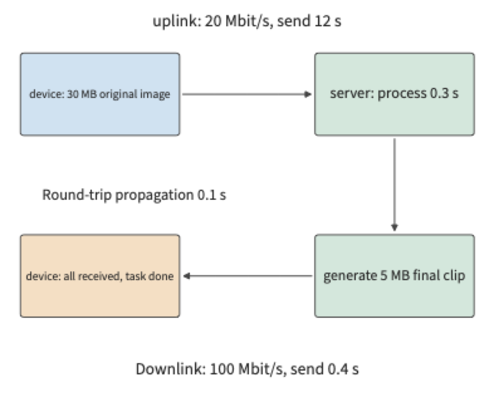
When building the model, first distinguish between the time each step requires and the task completion time. File size divided by the send rate gives the time required to send it; the model's computation time is determined by the computational complexity and the processor's execution speed. When steps execute sequentially, total time equals the sum of each step's duration; when some steps execute concurrently, the time at which the last step finishes must be computed based on their dependencies.
Before writing these relationships as formulas, let's fix the simplifying conditions for this example: round-trip time (RTT) is simplified to the time required for round-trip propagation; queueing and protocol-processing overhead are discussed separately in Section 12.3. The connection is already established, the server begins processing after receiving the complete raw image, sends the finished image to the user after generating it, and uplink/downlink transmit payload at a constant rate. Let the input be \(S_u\) bytes, the output be \(S_d\) bytes, the uplink/downlink rates be \(B_u,B_d\) bytes/s, the RTT be \(R\), and the processing time be \(T_c\). The serial completion time is
After the last byte of the upload leaves the sender, it still needs to propagate to the server; the return of the finished image also propagates once. The two one-way propagations sum to \(R\). Propagation time is determined by the path; send time is determined by file size and rate, so shrinking the file only shortens the send time. Here \(B_u,B_d\) denote the transmission rate of the payload; connection startup and feedback waiting are added separately in Section 12.3.
Example: How does upload time limit the benefit of model acceleration in image enhancement? Uplink is 20 Mbit/s, downlink is 100 Mbit/s, \(R=0.1\) s, \(T_c=0.3\) s. Throughout this chapter, MB and Mbit use decimal units; MiB is \(2^{20}\) bytes. Substituting gives
The upload accounts for 12 seconds, about 94% of the total time. Speeding up the processing stage tenfold shortens completion time to 12.53 seconds, saving only 0.27 seconds. Even if processing finished instantly, upload, propagation, and download would still require 12.5 seconds. This is exactly the limit described by Amdahl's law: the processing stage accounts for only about 2.3% of the total time, so even eliminating it entirely can shorten the total time by only about 2.3%.
The time saved by model acceleration is limited; another path is to shorten the transmission. Raising the uplink rate to 100 Mbit/s drops upload time to 2.4 seconds, and the entire task requires only 3.2 seconds — four times faster. Another approach is to keep the uplink rate unchanged and compress the input. Suppose lossless compression halves the input; the extra encoding/decoding together takes 0.15 seconds, so sending takes only 6 seconds, and the complete task takes about 7.0 seconds. Compression is worthwhile here because adding 0.15 seconds of encoding/decoding saves 6 seconds of transmission.
Let the compressed input size be \(S'_u\), and the extra encoding/decoding time be \(T_e\). The total time saved by compression is
Setting this expression's benefit to zero gives the uplink rate at which compression exactly stops saving time. At an uplink rate of 20 Mbit/s, sending 15 MB less saves 6 seconds; at 100 Mbit/s it saves 1.2 seconds; at 800 Mbit/s it saves only 0.15 seconds, and the benefit drops to zero. The computational cost of the same compression method hasn't changed; what changes is how long it takes to send those bytes. Figure 12-2 shows this relationship.
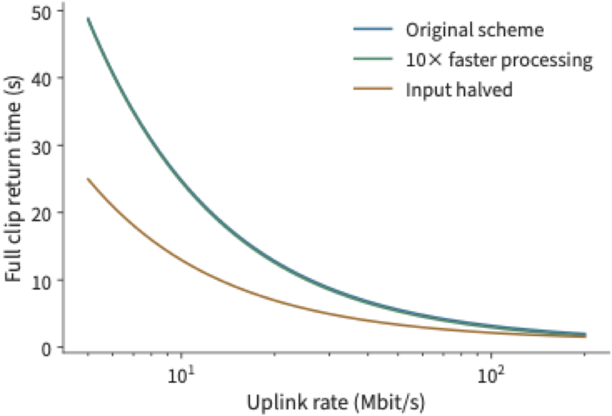
Next, consider whether steps can overlap. Suppose the raw image is split into three chunks that can each be processed independently once received: each chunk takes 4 seconds to upload and 0.1 seconds to process; the three output chunks are 1, 2, and 2 MB, requiring 0.08, 0.16, and 0.16 seconds respectively to return. After the first chunk reaches the server, its processing and return can overlap with the upload of the second chunk; likewise for the second chunk. The last chunk still finishes uploading only at second 12; after that comes processing, return, and propagation, and the complete finished image returns to the user around 12.4 seconds. Compared with the original 12.8 seconds, the processing and return of the first two chunks complete during the subsequent uploads and add no extra waiting; but the total 12-second upload time cannot be shortened.8
Figures 12-3 and 12-4 compare the two arrangements on the same timeline.
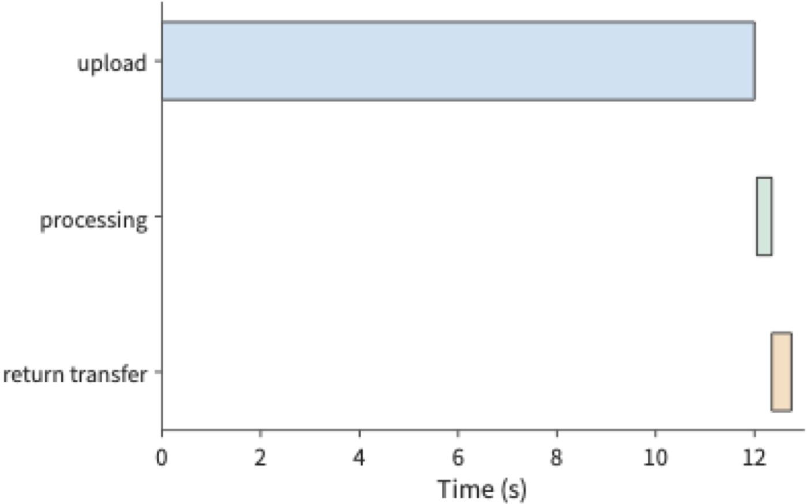
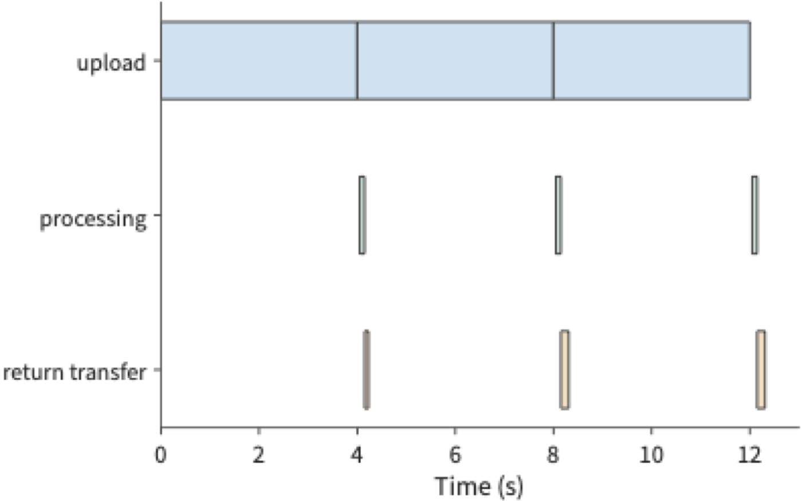
If processing requires global exposure or cross-chunk information, it must wait until the whole image has arrived before it can begin, and the whole task still takes 12.8 seconds even with chunked sending. Computational complexity and data volume determine how long each step takes; dependencies determine whether steps can execute concurrently. Real-time speech services continuously receive, process, and play audio, and are better described with a pipeline that captures these dependencies.
12.1.2 Real-Time Speech¶
Automatic speech recognition (ASR) converts audio to text; text-to-speech (TTS) converts text into playable audio. A streaming service can produce results while still receiving input. Take TTS as an example: the user can start listening before the entire audio segment finishes being synthesized. So besides when the whole synthesis finishes, we also need to know when the first segment starts playing, and whether subsequent playback stays continuous.
To compute these moments, first write the pipeline as a chunk-by-chunk recurrence relation. Consider an audio processing pipeline where input chunks correspond one-to-one with output chunks. The capture end produces one audio chunk every 20 ms; the model processes it and sends out the result; the player plays chunks in order. Chunk \(i\) of the input becomes ready at time \(a_i\); model processing takes \(m_i\); sending takes \(s_i\); one-way propagation is \(d_i\). The processor processes chunks one at a time, and the network interface sends results one at a time, so
Here \(c_i\), \(u_i\), \(r_i\) denote the moments when processing completes, sending completes, and the chunk arrives, respectively. The first max expresses that processing this chunk must wait both for its input to be ready and for the processor to finish the previous chunk; the second max expresses that sending this chunk must wait both for computation to finish and for the outbound link to be free. These two waits come from data dependency and resource contention, respectively.
Example: Why can network latency jitter exhaust an audio playback buffer? Pulse-code modulation (PCM) records successive amplitude samples of audio; 24 kHz means 24,000 samples per second, mono means a single sample channel, and 16-bit means each sample occupies 2 bytes. Using 24 kHz, mono, 16-bit PCM, each chunk is 20 ms, 960 bytes. Processing a chunk takes 12 ms, sending takes 1 ms, and typical propagation takes 5 ms. The first chunk finishes capturing at 20 ms and arrives at 38 ms; after a 40 ms buffer it plays at 78 ms (Figure 12-5). The second chunk arrives at 58 ms and plays right after at 98 ms. Each chunk's processing time is 8 ms shorter than the capture interval, and sending takes only 1 ms, so both processing and sending can keep up with the capture rate.
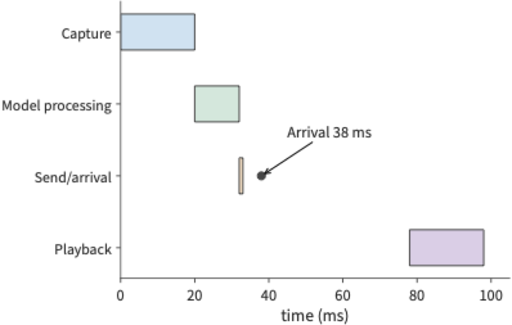
Change the propagation time of the third chunk to 50 ms; this chunk arrives at 123 ms, 5 ms later than its originally scheduled playback time of 118 ms. Although the fourth chunk has already arrived at 98 ms, the player must still play the third chunk first, so subsequent playback is delayed together (Figure 12-6).9
![Figure 12-6: The late arrival of the third chunk delays playback of all subsequent chunks by 5 ms. Each chunk is 20 ms long, with 12 ms model processing and 1 ms sending; typical propagation is 5 ms, but the third chunk's propagation is 50 ms, with an initial 40 ms buffer. Solid segments show actual playback, light outlines show the originally scheduled playback window, and dots mark arrivals; all times are measured from the start of capturing the first chunk. The figure is computed from the pipeline above; the player waits for missing chunks rather than dropping them.](images/figure-12-3-paths.png)
Generalize this playback rule: let each audio chunk's duration be \(\tau\), and the initial buffer be \(J\). The first chunk begins playing at \(p_0=r_0+J\), and subsequent chunks begin at
The max here reflects that the player must wait both for "this chunk to arrive" and for "the previous chunk to finish playing." When the first term is larger, the difference is the newly added stall. Raising the initial buffer from 40 ms to 45 ms also delays the third chunk's scheduled playback to 123 ms, which is exactly enough to avoid the playback interruption caused by the 5 ms late arrival; the cost is that the first segment also starts playing 5 ms later. Increasing the initial buffer prolongs the wait before first playback but also tolerates larger arrival-time fluctuations, making subsequent playback more continuous.
Long-term insufficient transmission rate produces a different kind of stall. For ease of computation, take 16 kHz, mono, 16-bit PCM, where the data rate required for playback is 256 kbit/s, with 20 ms corresponding to 640 bytes. If the network can only sustain 130 kbit/s of audio transmission long-term, the buffer shrinks net by 126 kbit per second. An initial buffer holding 60 ms of audio contains 15,360 bits, which is exhausted in roughly \(15360/(256000-130000)\approx0.12\) seconds.
Plotting the not-yet-played data as a curve declining over time reveals the difference between short-term jitter and long-term rate insufficiency. In Figure 12-7, increasing the buffer only raises the starting point; the slope doesn't change.
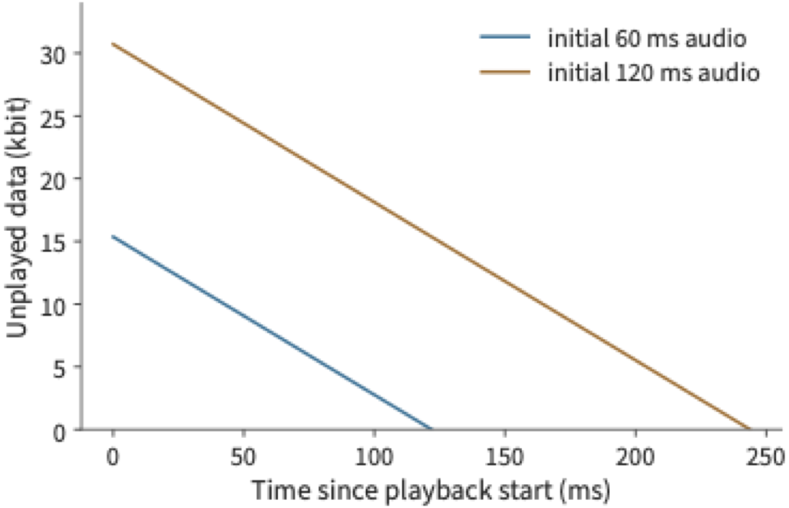
Increasing the buffer only postpones the moment of exhaustion proportionally; only raising the transmission rate or lowering the audio bitrate can make the received data sufficient for playback. Buffering can mitigate the effect of short-term latency fluctuations on playback, whereas long-term insufficient transmission rate requires more bandwidth or less data.
12.1.3 Computer Use: Completing Tasks via Interface Operations¶
Computer use lets a program act like a user, completing tasks through screenshots, clicks, and input. The program cycles between observing the interface, model judgment, executing an action, and observing again. The key difference from the audio pipeline is that a valid next screenshot can only be obtained after the previous round's action completes and the interface updates. Before the model decides where to click, it cannot obtain the interface after that click. As a result, the waiting within one round accumulates repeatedly across the task.
The return arrow in Figure 12-8 shows that this task, unlike audio, is hard to overlap chunk by chunk: subsequent work must wait for the action to produce a new interface.
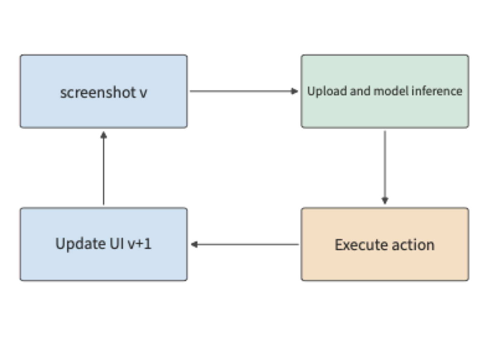
Take a task requiring 30 rounds of actions as an example. Using the original service, each round uploads a 0.8 MB screenshot; with an uplink of 6.4 Mbit/s, the upload takes 1 second; edge-side observation, action, and interface update together take 0.3 seconds; the remote model takes 2.0 seconds; round-trip propagation is 0.2 seconds. The connection is already established, and the send time for the control reply is taken as zero. One round is \(1+0.3+2.0+0.2=3.5\) seconds; 30 rounds total 105 seconds.
Example: Can the transmission time saved by screenshot compression offset extra rounds of action? Compress the screenshot to 0.2 MB; the extra encoding takes 30 ms, dropping upload time to 0.25 seconds; the rest of the work still takes 2.5 seconds. So
Each round saves 0.72 seconds; over 30 rounds this saves 21.6 seconds, taking the task from 105 seconds down to about 83 seconds.
Compression may also change the number of action rounds. If blurred text causes the agent to perform more correction actions, the compressed total time should be written as \(2.78N'\), where \(N'\) is the actual number of rounds needed. From \(2.78N'<105\) we get \(N'<37.8\), so the maximum number of rounds for which task time is still shortened is 37; 38 rounds would take about 106 seconds. The quality of the compressed image affects the number of corrections. This task allows at most seven extra rounds of action; beyond that count, correction time offsets the time saved by compression.
The screenshot version also directly affects the number of rounds. Suppose the model reads version \(v\), and the interface then changes; an action based on the old screenshot might then be wrong, requiring the interface to be restored and a new screenshot taken. Binding the screenshot version to the action number, and having the terminal retake a screenshot whenever the interface changes, avoids this kind of wasted work.10
Section 12.5 will continue analyzing this screenshot task: with the first ten rounds already completed, the remaining twenty rounds require choosing where to execute, keeping the screenshot size, edge-side work, and the original path parameters fixed, and comparing how much time a faster model service can save.
12.1.4 A Preliminary Comparison of Local, Nearby, and Cloud¶
The analysis in Sections 12.1.1 through 12.1.3 can be summarized into three levels, each corresponding to a different object of computation:
| Analysis level | Object of computation | Conclusion reached |
|---|---|---|
| Time per step | How long computation, sending, and propagation each take | Uploading the raw image takes 12 seconds, the model takes 0.3 seconds |
| Execution dependency | Which work can overlap, which must wait | Independent image chunks can overlap; the next round's screenshot must wait for the previous round's action to finish |
| Actual execution | When computation and sending start once data is ready | Even when average audio transmission rate is sufficient, one late arrival can still cause a stall |
First use per-step timing and dependency relationships to judge whether remote execution can be faster. When handing the entire task to a remote service, the computation time saved must exceed the added time for upload, download, propagation, queueing, and preparation. Multi-round tasks only need preparation once, but communication happens every round; continuously played audio must also ensure data arrives in time. Where the model is placed simultaneously changes computation, communication, and preparation time.
Minimum propagation time alone can rule out servers that are too far away early on. Light propagates in fiber at about \(2\times10^8\) m/s; for a one-way path of 10,000 km, round-trip propagation alone requires at least about 100 ms. If a response is required from a remote server within 50 ms, propagation time alone already exceeds that deadline. Using a closer server can directly shorten this wait.
The comparison above treats the edge device as a single execution location, computing only the time difference between edge and remote; how fast the edge device itself can compute, and what it can accommodate, has not yet been examined. Section 12.1.5 first quantitatively analyzes the edge device's execution resources, and Section 12.2 then decides what to transmit: sending the image when handing the whole task to a remote service, sending features after edge-side encoding, and sending state when migrating a session; once the object of transmission changes, the data volume and required time change accordingly.
12.1.5 Edge Execution Resources and Local Deployment¶
Section 12.5's comparison of deployment schemes will use "2.9 seconds of edge-side model computation per round." To explain where this figure comes from and under what conditions it holds, we need to quantitatively analyze the edge device as an execution resource: memory bandwidth determines the minimum time to generate each token, memory capacity determines what model can be accommodated and how long a context can be retained, and power consumption and battery determine how long execution can continue.
A phone as an execution resource: bandwidth first gives an upper bound on tokens per second. The SoC of a flagship phone uses LPDDR5X memory, a low-power DRAM standard aimed at mobile devices such as phones. Snapdragon 8 Elite's product brief lists a maximum of 5,300 MHz and a maximum capacity of 24 GB, but does not give the bus width; LPDDR5X transfers data twice per clock cycle, so 5,300 MHz equals 10.6 Gbit/s per pin, slightly below the 10.7 Gbit/s top speed grade for LPDDR5X devices; the JEDEC standard device is a single x16 channel.1 By the SoC's supported rate, one x16 channel's bandwidth is \(16\times10.6/8=21.2\) GB/s; for four x16 channels combined, the total is 84.8 GB/s.2
Once bandwidth is given, how long each step takes depends on how much data that step reads. The fixed workload follows the calculation from Section 4.8.2: Qwen3-8B, BF16, single request, 8K context, where one decode step reads 15.14 GB of weights and 1.21 GB of KV, totaling about 16.345 GB.2 Reading just the weights once takes
giving a decode upper bound of about 5.6 token/s; including KV, each step takes about 0.193 s, an upper bound of about 5.2 token/s. Quantization directly reduces the number of bytes read per step: using the q4_0 grouping format from Section 8.4, every 32 BF16 values go from 64 bytes to 18 bytes, dropping weight reads per step to about \(15.14\times18/64\approx4.26\) GB, with a per-step total of about 5.47 GB and 64.4 ms, an upper bound of about 15.5 token/s. MELTing Point measured on an iPhone 14 Pro 14.8 token/s for Zephyr-3B q4_k and 6.0 token/s for Llama-2 7B q3_k (q4_k, q3_k are 4-bit and 3-bit grouped quantization formats in the same GGML family as Q2_K from Section 8.4.1), consistent in order of magnitude with what's derived here.3
Capacity determines what model can be accommodated and how long a context can be retained. Following the capacity formula from Section 2.6.2: available memory minus weights and fixed reservation, divided by the per-request state size, gives capacity. Take phone memory from Micron's three LPDDR5X capacity options — 6, 12, and 24 GB — plus the 16 GB commonly used in flagship phones, with 4 GB reserved for system and workspace.1 Qwen3-8B's BF16 weights total 16.38 GB, about 1.24 GB more than the 15.14 GB read per step, due to the embedding table: decode looks up only one row per token each step, yet the entire table must remain resident in memory. On this resident-memory basis, only the 24 GB tier can accommodate it; after reserving memory, about 3.62 GB remains, enough for only two 8K requests; quantized to q4_0, it drops to about 4.61 GB:
| Phone memory | After reserving memory and 4.61 GB weights | Requests and context that can be accommodated |
|---|---|---|
| 6 GB | About −2.61 GB | Cannot accommodate 8B; a 3B-class q4 model at about 1.7 GB can be accommodated |
| 12 GB | About 3.39 GB | Two 8K requests, or a single request of about 23K tokens |
| 16 GB | About 7.39 GB | Six 8K requests, or a single request of about 50K tokens |
| 24 GB | About 15.39 GB | Twelve 8K requests, or a single request of about 104K tokens |
One 8K request's BF16 KV is 1.21 GB, at 147,456 bytes per token, growing linearly with context length; once the model is accommodated, remaining memory directly determines context length. The 16 GB tier is also the dividing line for 8-bit quantization: q8_0 weights are about 8.70 GB; after reserving memory, about 3.30 GB remains, room for two 8K requests; phones with less memory cannot accommodate an 8-bit 8B model.
Power consumption and battery life are costs unique to edge deployment. Section 4.1.3's energy breakdown gave an order-of-magnitude estimate of about 0.534 J per token for single-request 8K decode on an H100, covering only data movement and matrix computation. Measurements on phones, however, include whole-device power draw: MELTing Point measured 0.16–0.21 mWh per token, i.e., 0.576–0.756 J, with peak sustained power of 13.8 W and instantaneous power exceeding 18 W. The measured throughput and energy figures cross-check each other: 14.8 token/s times 0.576 J per token is about 8.5 W, within the 13.8 W sustained power limit. Extrapolating from this set of measurements, a single charge can complete roughly 490–590 prompts of inference.3 So the cost of edge deployment isn't just time and money: the sustained generation rate is bounded by a power ceiling, and cumulative work is bounded by battery capacity.
Three tiers of local deployment devices. The two tiers above the phone can be taken directly from Section 4.8.2, which already lists decode/prefill time lower bounds for 11 candidate devices using the same model: the M3 Ultra's unified memory offers 819 GB/s, 256/512 GB, with a per-step read lower bound of 19.96 ms, about 50.1 token/s, and enough capacity for a 4-bit 235B MoE (Section 4.6.3); the RTX PRO 6000 offers 1,792 GB/s, 96 GB, with 9.12 ms per step, about 109.6 token/s. Figure 12-9 places the three tiers on the same timeline.
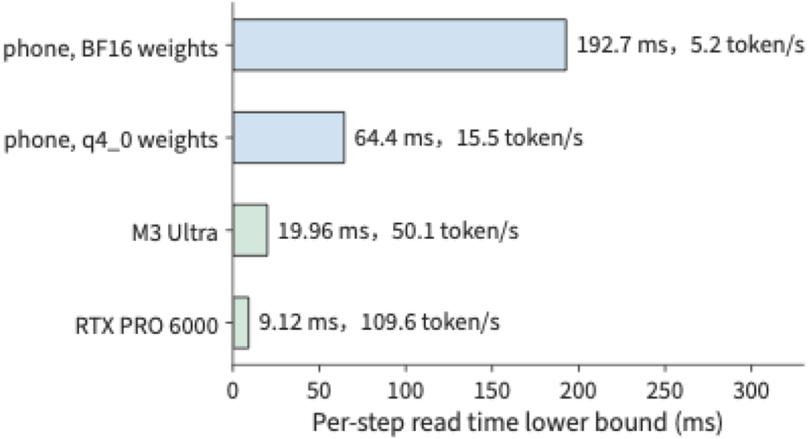
Each runtime solves a different layer of the problem. Devices give bandwidth and capacity lower bounds; actual execution also depends on the runtime. llama.cpp addresses how weights are stored and executed chunk by chunk: GGUF (llama.cpp's model file format) grouped-quantization layout determines the capacity after loading and the amount read per step; Section 8.4.1 already worked out Q2_K's 84 bytes per group, averaging 2.625 bit per value. Ollama addresses model distribution and local service packaging: this corresponds to the tradeoff discussed in Section 12.2.3, "prepare once, reuse many times" — what Ollama saves is deployment preparation time, not per-step execution time. MLX targets Apple's unified memory (Section 4.6.3): CPU and GPU share the same memory pool, eliminating data copies between them, and the model capacity ceiling is the whole machine's memory. Unsloth targets edge and single-card fine-tuning: it squeezes the training-state capacity budget into a single card or machine, with quantization formats still drawn from Section 8.4. None of these four runtimes changes the bandwidth and capacity lower bounds derived above; they only determine how closely actual execution can approach these bounds. The unified measure of this gap is the ratio of measured time to the lower bound. Section 12.5.2 will use the records from Experiment 8-1 to show that, on an RTX PRO 6000, the measured time for one decode step is 2.83 times the read lower bound, with the excess mostly coming from fixed per-step overhead; by the criterion in Section 1.3.4, this is reducible system overhead, not a limitation of device capability.
Among these, the capacity Unsloth saves can be computed directly using the per-parameter byte count from Section 10.1.2. Full-parameter mixed-precision Adam uses 16 bytes per parameter: BF16 weights and gradients each take 2 bytes, and FP32 master weights and the two moments each take 4 bytes. LoRA freezes the base weights and retains gradients and optimizer state only for the newly added low-rank adapter: Qwen3-8B's rank-16 BF16 adapter on the Q and V projections is 14.6 MiB (the multi-LoRA example at the end of Chapter 8), about 7.65 million parameters. The adapter's weights, gradients, master weights, and two moments together take 16 bytes per parameter, about 0.12 GB; adding the 16.38 GB BF16 base weights gives about 16.5 GB total. Comparing resident state only, excluding activations and temporary buffers:
| GPU memory | Full-parameter mixed-precision Adam, 16 bytes/parameter | BF16 base weights + rank-16 Q/V LoRA |
|---|---|---|
| 24 GB (RTX 4090) | About 1.5B parameters | About 12B parameters; Qwen3-8B needs about 16.5 GB |
| 96 GB (RTX PRO 6000) | About 6B parameters | About 48B parameters |
An RTX 4090 cannot accommodate the 131.1 GB of state needed for full-parameter training of Qwen3-8B, but it can accommodate its LoRA training; what Unsloth saves is this state, not the bandwidth lower bound for reading weights each step.
The tipping point: when is the edge sufficient, and when must you go to the cloud? The three lower bounds each give a tipping condition. Bandwidth: when \(G\) tokens are generated per round, the edge model's time lower bound is \(G\) times the per-step time. This is exactly how Section 12.5's "2.9 seconds of edge-side model computation per round" was derived: at q4_0's 15.5 token/s, 2.9 seconds corresponds to generating about 45 tokens per round; at BF16's 5.2 token/s, it corresponds to only about 15. Working backward from a deadline to a budget: a 45-second deadline spread over 20 rounds gives 2.25 seconds per round; after subtracting 0.3 seconds of edge-side work, about 1.95 seconds remain, so under phone q4_0 at most about 30 tokens per round can be generated; a demand exceeding this count requires switching to a higher-bandwidth device or going to the cloud. A demand of 45 tokens per round already exceeds this budget, which is why Section 12.5.2's edge-side scheme needs 64.0 seconds, exceeding the deadline. Capacity: when weights plus the required context exceed the available memory of a given tier, that tier is infeasible — a 12 GB phone cannot accommodate a BF16 8B model, and the phone tier cannot accommodate a 235B model. Power: continuous generation turns the battery into a constraint, with one charge corresponding to about 490–590 prompts; batch or long-duration generation should go to a device connected to power. These three conditions complete the preliminary comparison from Section 12.1.4: that section compared each scheme's completion time, whereas here we first rule out scenarios where the edge is fundamentally infeasible. Exercise 12-9 uses the same set of formulas to recompute the bandwidth, capacity, and power ceiling for the phone tier.
12.2 Cross-Device Division of Labor¶
12.2.1 Full Model Invocation and Staged Execution¶
The same screenshot can first be sent to the server, which converts it into features the model uses; alternatively, the terminal can generate the features first and send only the features to the server. In these two paths, the object crossing the network is already different. The image example in section 12.1.1 shows that slow file transfer makes computation wait; once part of the computation moves to the edge, the object that actually needs to be sent changes accordingly.
The subnetwork that converts an image or audio signal into the numerical features the model uses is called an encoder. Placing the entire model at the remote end requires uploading the input and downloading the result; keeping the encoder on the edge device requires uploading the encoder's output. The data volume of an image file versus a feature tensor is determined by their respective representations, so doing the computation on the edge first does not guarantee a smaller upload.
Take the screenshot agent as an example: image compression uses fewer bytes to represent textures and repeated regions, whereas the vision encoder must expand the image into channel values for each vision token, for the language model to read. The former aims at compact storage, the latter at downstream computation.
Compare two schemes: one uploads the image first and encodes it remotely; the other encodes locally first and then uploads the features. The subsequent language-model computation is identical in both, so when computing the difference in total time between the two schemes, this part exactly cancels out. Therefore, we only need to compare local versus remote encoding time, and the transmission time of the image versus the features.
12.2.2 Transfer Volume and Computation Overhead of Edge Encoding¶
Follow the arrows in Figures 12-10 and 12-11 to first confirm what each scheme transmits, then compare the transfer volume against the remote computation time saved.
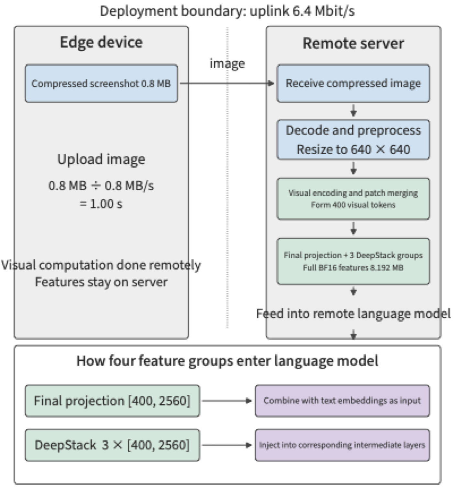
![Figure 12-11: Execution path for edge encoding. Preprocessing and vision encoding move to the terminal, so the object crossing the network becomes the final projection plus the three sets of DeepStack complete BF16 features, totaling 8.192 MB; once received remotely, integration into the language model proceeds the same way. At the same uplink, the feature send time is 10.24 seconds; local encoding, serialization, and conversion time are counted separately. The values in the figure use the fixed Qwen3-VL-4B configuration discussed below.](images/figure-12-encoder-local.png)
Example: why can uploading visual features be slower than uploading the original image? Continue with the 0.8 MB screenshot and 6.4 Mbit/s uplink. Vision encoding uses the fixed configuration of Qwen3-VL-4B: the preprocessed image size is \(640\times640\), and after patch merging this yields 400 vision tokens; here a vision token is a feature vector representing image content, not a text token, and not a single pixel of the original image. Each final-projection feature vector has 2560 components, plus three sets of DeepStack features of the same width (section 3.3.1); these branch outputs must be transmitted together. Each vision token requires storing \(4\times2560=10240\) BF16 values in total, so the complete output is
The four sets of features feed into different layers of the language model. Transmitting only the final projection would omit the other three sets. The complete feature set is about 8.2 MB, roughly ten times the compressed image; on the original uplink, the send time rises from 1 second to about 10.2 seconds (Figure 12-12).11
![Figure 12-12: The complete visual features of the same image require more transmission time than the compressed image. The compressed image is 0.8 MB; on a 640×640 preprocessed input, Qwen3-VL-4B produces 400 vision tokens, and the final projection plus the three DeepStack sets together form [400,10240] BF16 values, totaling 8,192,000 bytes. The uplink rate is 6.4 Mbit/s; bar length indicates send time; encoding, queueing, and conversion time are counted separately. Both schemes process the same image and accomplish the same visual understanding task.](images/figure-12-6-placement.png)
Write this comparison in general form: let \(T_{E,l}\) denote local encoding time, \(T_{E,r}\) denote remote encoding time, and \(T_x\) denote the extra serialization and conversion time in the local-encoding scheme. The time difference between the two schemes is
Edge encoding is faster when \(\Delta T<0\). Suppose the terminal is a desktop with an RTX 4090, and the remote end is an H100 SXM. Encoding one image requires 1.31 TFLOPs of matrix operations; using the BF16 dense peak rates of 165.2 and 989.4 TFLOP/s respectively, the encoding-time lower bounds are about 7.9 ms and 1.3 ms. Taking \(T_x=0\), the local-encoding scheme needs about 10.25 seconds, and the remote-encoding scheme needs about 1.00 second. The local scheme is slower on both computation and transmission: local computation is about 6.6 ms more, and feature transmission is about 9.2 seconds more.12
As the link gets faster, the extra time from sending features instead of the image shrinks. If the encoder and language model sit on two servers in the same datacenter, connected via a 400 Gbit/s ConnectX-7 port (50 GB/s per direction), the send-time difference between the image and the features is only about 0.15 ms, already smaller than the encoding-time difference between the two cards above. In that case, only a saving of more than 0.15 ms in encoding plus queueing makes the other-machine encoding scheme faster; on the original slow uplink, more than 9 seconds must be saved. Deciding where to place the encoder therefore means comparing transfer volume on a slow link, and comparing encoding and queueing time on a fast link.
In multi-turn tasks, repeated images can reuse the EC, further reducing the number of encoding operations. When the same image reappears, a cache hit saves one encoding pass; when the interface content changes, re-encoding is required. A set of CPU experiments using images of the same size observed the same behavior.13 When computing the total encoding time across multiple turns, one can multiply the single-encoding time by the number of cache misses. Cache left over from earlier turns is thus already factored into the comparison.
Visual features only save the vision-encoding step; if we want to reuse results the language model has already computed, we must save the KV that the language model produces layer by layer while processing the prefix. In this configuration, each language-model input token requires 144 KiB of logical KV storage, so 400 vision tokens need about 56.3 MiB. The image, the roughly 7.8 MiB visual features, and the roughly 56.3 MiB vision-token KV correspond to three different recomputation starting points (Figure 12-13). The closer the cache is to the model's final output, the more computation is saved on reuse, but the larger the data that may need to be transmitted. Section 12.2.3 compares how long it takes to transfer a piece of state once against how much time is saved by later reuse of that state.
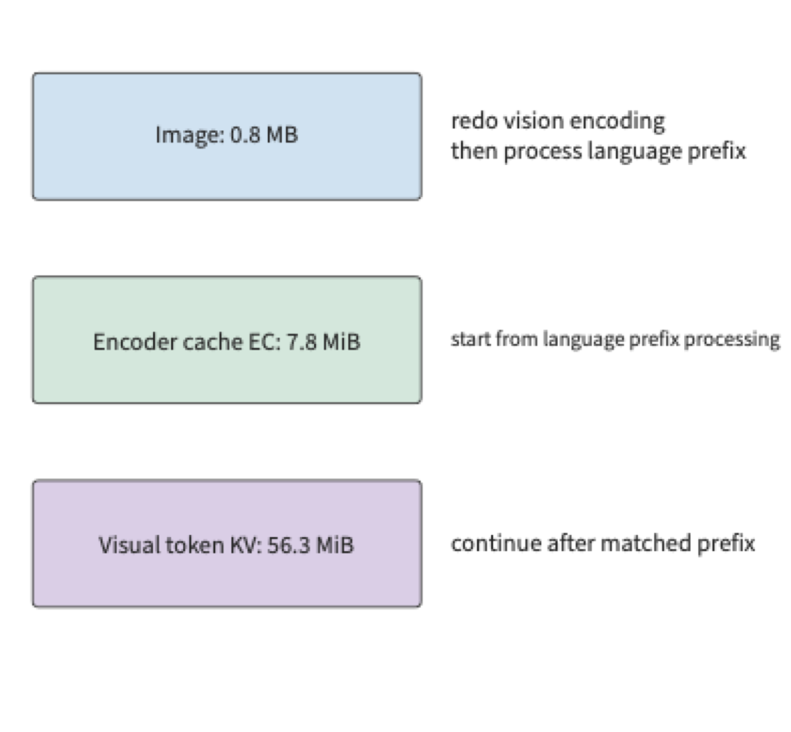
12.2.3 Preparation, Reuse, and Recovery in Session Migration¶
Session migration transfers cache and task progress to another device, letting the receiving device continue execution. When the destination device already has compatible weights, what needs to be transferred is the encoding cache, language-model KV, task records, and recovery information. After confirming that the state formats on both ends are compatible, we can compare the preparation time before migration against the time saved per round after migration.
Let the preparation time needed for migration be \(M\), the time saved per round on the new device be \(\Delta t>0\), and the number of rounds remaining be \(N\). The time difference between continuing on the original device and migrating to the new device is
\(G(N)>0\) means migration is beneficial. Each additional round increases the benefit by \(\Delta t\); the preparation time \(M\) shifts the entire benefit curve downward. So the same migration is not worthwhile for short tasks but is worthwhile for long sessions.
Example: how many more rounds of interaction are needed before state migration saves time? Migration requires transferring 64 MiB of state over an 80 Mbit/s link, then spending 1 second on recovery. The total time for migration preparation is
At 0.4 seconds saved per round, 10 rounds gives a net loss of about 3.7 seconds, 20 rounds gives a net saving of about 0.3 seconds, and 40 rounds gives a net saving of about 8.3 seconds. Solving \(N>M/0.4\) with the unrounded \(M\) gives a minimum of 20 rounds. This round count indicates when the migration overhead starts to be offset; the magnitude of the net benefit indicates how much extra cost is worth bearing for this switch.
In Figure 12-14, the net saving starts negative right after migration, then rises by 0.4 seconds with each completed round. The breakeven round count corresponds to where the curve crosses the zero line.
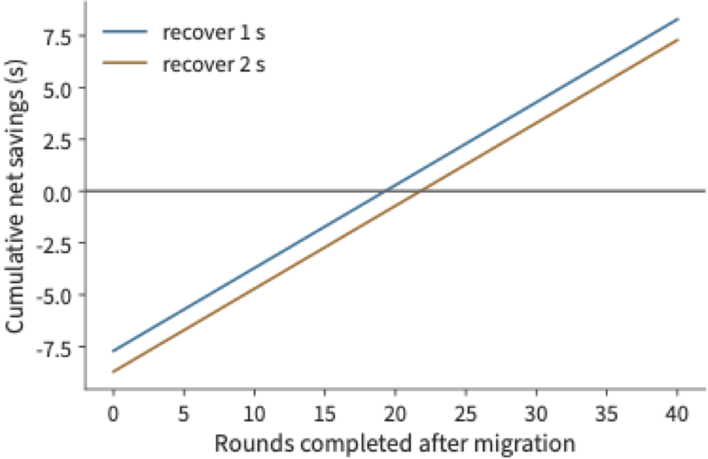
For example, if recovery time increases by another 1 second, the net benefit at round 20 immediately becomes about negative 0.7 seconds, and the breakeven round count rises to 22. If 40 more rounds are expected afterward, this additional 1 second still leaves a saving of about 7.3 seconds. Deployed systems therefore need to predict remaining session length and leave room for extra transmission and recovery overhead.
The "recovery time" in the curve includes the preparation work the new device needs before it can continue execution. Besides loading cached data into memory, the new device must also determine how far the task has already progressed. Language-model KV is tied to the model, the prefix, and the token position index; the progress of the screenshot agent is determined by the operations already executed. A click has already changed the interface, so even if the response is lost, the state should be restored to what follows the click. Operation numbers and submission records let the destination device look up existing results and continue from the next round. Saving these records avoids re-executing operations, just as reusing the cache avoids recomputation.
Connection warmup, graph compilation, and model loading can also be analyzed with \(N\Delta t-M\): put the preparation cost into \(M\), and put the reduced waiting time on each subsequent call into \(\Delta t\).15 Whether this preparation is worthwhile depends on whether the time saved on later calls offsets the one-time preparation cost.
12.2.4 Communication Boundaries in Model-Internal Partitioning¶
Session migration transfers state only once, when switching devices. Another division of labor lets multiple devices continuously execute the model together, in which case communication happens repeatedly during execution. When the model is partitioned by stage, each input typically needs to be transferred only once between adjacent stages; with tensor parallelism, every layer's computation requires communication. Once the link changes from inter-card interconnect to a local-area network, frequent synchronization accumulates tiny per-call latencies into a major cost.
Take 36-layer Qwen3-8B running tensor parallelism (TP=2) on two devices as an example, and consider the two reductions per layer for the attention output and the FFN output; a reduction sums the two devices' partial results so that subsequent computation gets the complete output. Using the two-phase ring algorithm (the ring-based implementation from Chapter 7 that first does ReduceScatter and then AllGather), each reduction has two startup events, and each phase's startup takes \(\alpha\); so when generating one token, the total startup time for these reductions is
With \(\alpha=2\) μs, this amounts to about 0.29 ms. If the two devices instead connect over the kind of unaggregated 54 Mbit/s Wi-Fi described in section 12.4.1, each phase requires at least one short-frame exchange; at that section's 134 μs short-frame exchange carrying an ACK, 144 startups would take about 19.3 ms — more than twice the RTX PRO 6000's single-step decode read lower bound of 9.12 ms. Even with an extremely small payload, communication startup still takes time; and the next layer needs the current layer's reduction result, just as autoregressive generation of the next token needs the current token's output. Because these steps must execute in sequence, every communication startup time accumulates into the completion time of a single token.14
Figures 12-15 and 12-16 successively expand one layer's attention output and feedforward output; both must pass through one reduction along the execution direction before the next layer can begin. A single wait is short, but the number of repetitions is dictated by the model structure.
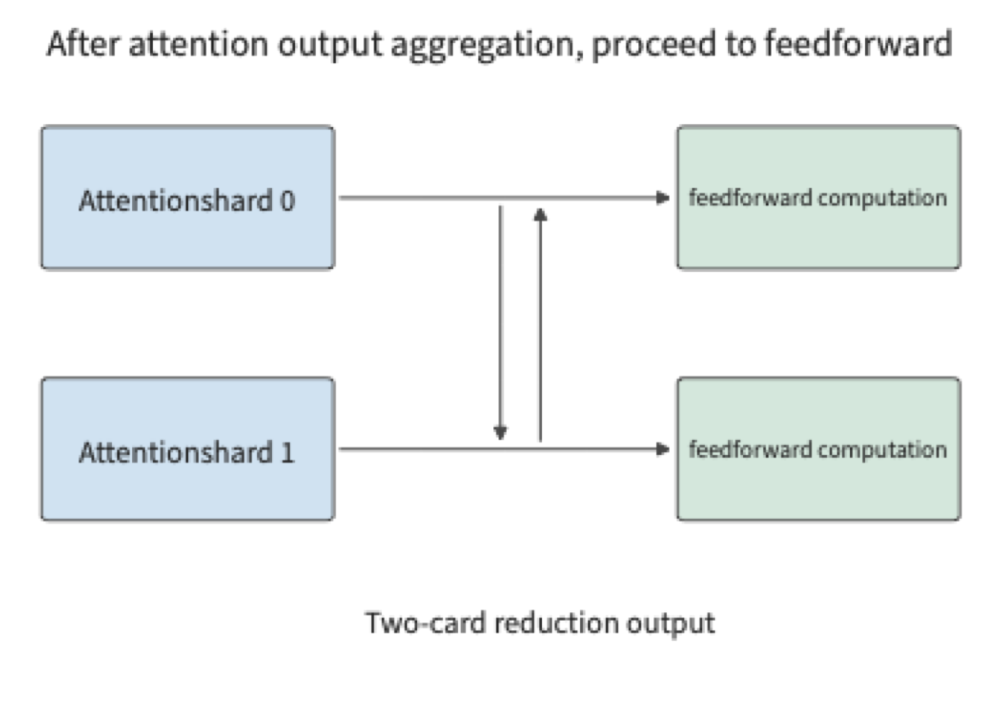
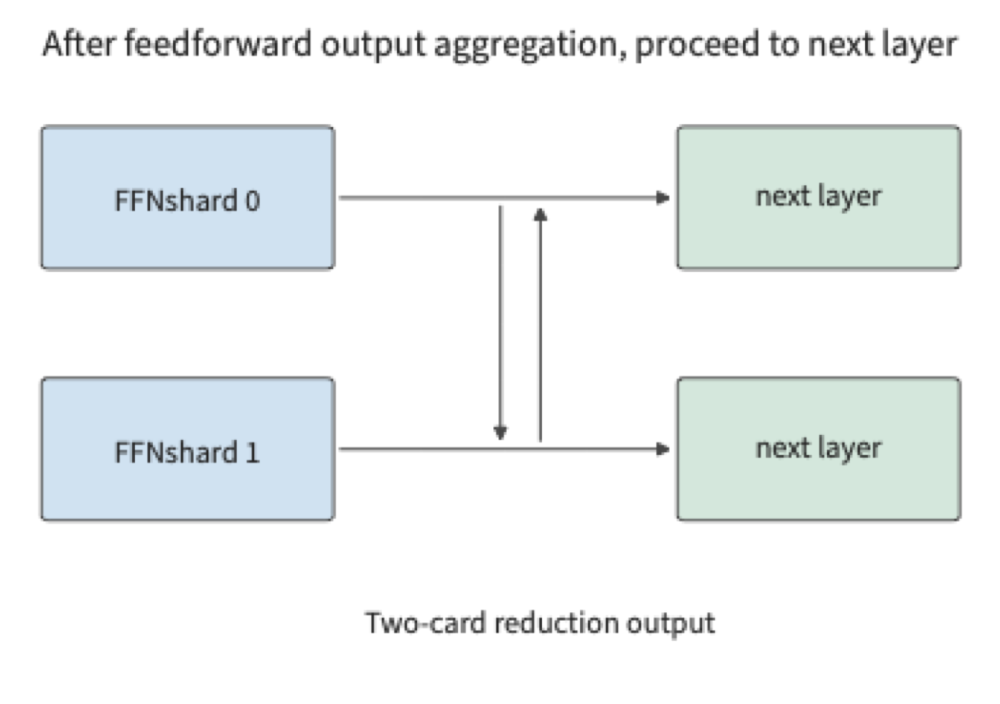
Unlike tensor parallelism's layer-by-layer synchronization, pipeline parallelism divides layers into consecutive stages, concentrating communication on activation transfers between adjacent stages. For a single request, one token still needs to pass through each stage in sequence; for multiple independent requests, different stages can process different requests simultaneously. This yields two kinds of benefit: fewer communication events shorten the wait for a single request, and having different stages process requests concurrently raises overall throughput. When choosing between tensor parallelism and pipeline parallelism, first draw the dependency graph for one token, then arrange how multiple requests occupy each stage's resources, and the two effects can be computed separately.
Once the model's division of labor is determined, what to send, how many times to send it, and which computations must wait for transmission are all clear. Section 12.3 examines the actual sending process: after data is ready, whether the connection is established, whether the window permits sending, and whether acknowledgments return in time.
12.3 Extra Overhead and Waiting in Wide-Area Network Transmission¶
12.3.1 Connection Establishment and Reuse¶
Section 12.1 assumed the connection was already established and that the link transmitted data at a constant rate. In practice, a request must first establish a connection and a security context — the keys, identity, and session state that both communicating parties maintain for authentication and encryption; it then obtains a sending quota, and finally waits for the receiver to hand the data to the application. Adding these waits to the time model of section 12.1 lets us analyze the actual execution process: data may already be ready, yet it may not be possible to compute or send it immediately.
These waits involve the following protocols. HTTP is the application-layer protocol that organizes requests and responses. HTTP/1.1 and HTTP/2 typically use TCP (a transport protocol providing a reliable, ordered byte stream) together with TLS (a security protocol that establishes authentication and encryption context); HTTP/3 uses QUIC (a protocol providing reliable multiflow transmission and connection management over UDP datagrams). UDP provides independent datagrams to the application and does not itself handle retransmission or ordering. QUIC combines the transport handshake with TLS 1.3, reducing the number of round trips needed to separately establish a transport connection and a security context. During session resumption, the client can also send early data — 0-RTT data — based on saved security state. If the server accepts it, processing continues; if rejected, the client resends; the server identifies retries by operation number and returns the previously saved result, so the same operation is not executed twice.16
Substitute the connection-establishment overhead into the screenshot task of section 12.1: continuing with the 30-round screenshot task's 200 ms RTT, suppose establishing a connection additionally requires two round trips. Rebuilding the connection every round costs 12 seconds cumulatively; establishing it only on the first round costs 0.4 seconds, a saving of 11.6 seconds. Connection reuse is effective because the remaining 29 rounds share the state established in the first round. The 105 seconds from section 12.1 was computed under the assumption that the connection was already established; adding the initial connection setup gives 105.4 seconds, whereas rebuilding every round gives 117 seconds.
Connection establishment is a one-time cost, while transmission happens every round. When requests are frequent, keeping the connection alive saves the next round's connection-establishment time; when the interval between requests is long, an idle connection still occupies memory and other resources. Closing the connection frees these resources, but the next call must re-establish the connection. As with session migration, this again involves comparing a one-time preparation cost against the benefit of multiple subsequent uses.
12.3.2 Windows, Feedback, and Effective Throughput¶
Reusing a connection avoids the connection-establishment wait, but sending data continuously still requires a sufficiently large sending window. Once a connection is established, the sender must also limit the amount of data in flight. The congestion window limits the amount of data already sent but not yet acknowledged; the receiver's flow control limits how much more data the sender can send, based on the receiver's own buffer space. Once an ACK arrives, the sender can continue sending; when the receiver reads data out of its buffer, it also notifies the sender of newly available space. When the sending limit is reached, the sender must wait for these notifications even if the link is idle.
Data in flight is the number of bytes already sent but not yet acknowledged. If the allowed in-flight amount is \(W\) and the round-trip time is \(R\), then at most about one window's worth of data can be transmitted per round-trip period, so
Here \(B_{\mathrm{path}}\) is the payload rate the path can provide, and \(B_{\mathrm{useful}}\) is the actual effective throughput. For the image-transmission path in section 12.1.1 with 20 Mbit/s bandwidth and 100 ms RTT, keeping the link continuously full requires about 250 KB of data in flight. With only a 64 KB quota, the rate limit is \(64000/0.1=640000\) bytes/s, about 5.1 Mbit/s, so sending just these 30 MB of data would take at least about 47 seconds. The link could carry more data per second, but the sender has to wait for the next batch of acknowledgments before it can continue sending; only by enlarging the available window can the actual transmission rate be raised in this situation.
Consider a model with batch-level acknowledgment in isolation: the receiver acknowledges only after collecting a full 64 KB batch, and the time from finishing sending that batch to receiving the acknowledgment is fixed at 100 ms. So the complete cycle consists of 25.6 ms of sending and 100 ms of feedback, totaling 125.6 ms. Figure 12-17 illustrates this waiting period. The blue segments are periods of actual sending; the light segments are periods when the link is idle even though it is physically free, because the sender's window is full and it cannot continue. Raising the physical bandwidth can only shorten the blue portion.
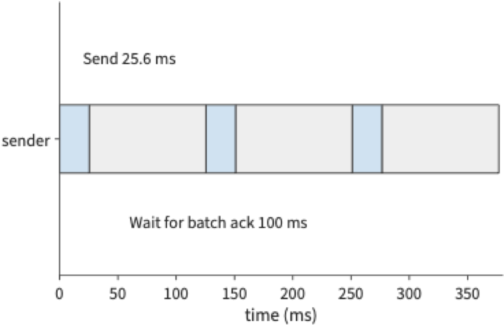
Figure 12-17 fixes the window at 64 KB in order to isolate the stop-and-wait process. New connections typically start with a smaller window that grows as acknowledgments arrive; short requests may finish before the window has fully grown. Suppose the initial window is ten 1460-byte segments, doubling after each round of feedback. Over the first four rounds, the cumulative amount that can be sent is \(14600(1+2+4+8)=219000\) bytes, and by the fifth round the cumulative total reaches 452,600 bytes. A roughly 355 KB voice request therefore cannot finish sending until the fifth round. With an RTT of 200 ms, a few rounds of feedback already add up to hundreds of milliseconds; most of the time for a short request may be spent waiting for acknowledgments. Section 12.3.5 will use this mechanism to explain a performance observation from a cross-region voice call.
The window explains why sending pauses. Total request time also depends on exactly how many bytes need to be sent: what travels over the network is not just the image, but also headers and acknowledgments.
Example: how do protocol headers and ACKs increase image transmission time? Continuing with uploading 30 MB and downloading 5 MB, take the maximum payload per packet as 1168 bytes, protocol and network headers as 60 bytes, and each data packet triggering a 92-byte ACK. There are about thirty thousand data packets in total; headers and acknowledgments add roughly \(30000\times(60+92)/10^6\approx4.6\) MB, so the actual amount transmitted rises from 35 MB to about 39.6 MB. Computing the timing of each send, acknowledgment, and subsequent send packet by packet, the complete request takes about 14.4 seconds.17
Compared with 12.8 seconds, the extra roughly 1.6 seconds comes from the work and waiting newly added to the model. Looking only at the actual number of bytes transmitted still isn't enough: an ACK both occupies the link and releases subsequent sending quota, so reducing the number of ACKs simultaneously changes both link occupancy and the timing of quota release.
The actual acknowledgment behavior is determined by the congestion control algorithm. NewReno is an algorithm that adjusts the congestion window based on packet loss and acknowledgments; CUBIC adjusts the window in the congestion-avoidance phase according to a cubic function of time; slow start is the phase early in a connection where the window increases rapidly with each acknowledgment. Under the same data-filling method and NewReno configuration, changing from immediate ACKs to acknowledging every two packets or waiting at most 10 ms reduces the actual data transmitted from about 39.6 MB to 38.2 MB, but the complete request time rises from about 14.52 seconds to 14.56 seconds — about 43 ms later.18 This comparison reveals feedback's dual role: sending fewer acknowledgments shortens transmission time, but late-arriving acknowledgments lengthen the window wait. Whether the overall completion is faster depends on comparing the transmission time saved against the additional waiting time.
ACKs determine when the sender can resume using the window to send data; congestion control determines how the window itself changes. In a comparison of large-image transfers on the same path, NewReno and CUBIC both produce complete response times of about 14.5 seconds; the window trace shows CUBIC remaining in slow start throughout.18 This particular request ends before CUBIC ever enters the congestion-avoidance phase, so what is observed is startup-phase behavior.
12.3.3 Is Packet Loss the Same as Congestion?¶
The window in section 12.3.2 grows with acknowledgments and also shrinks with packet loss. Traditional TCP congestion control does not directly measure path bandwidth; instead, it treats packet loss as a signal of congestion and infers the available rate from the loss rate. The Mathis model is a formula for estimating steady-state TCP throughput from the loss rate, and it gives the upper bound on the rate obtainable from this inference:4
where MSS (maximum segment size) is the maximum payload per packet, \(R\) is the round-trip time, and \(p\) is the loss rate; for periodic loss with per-packet acknowledgment, \(C=\sqrt{3/2}\approx1.22\), while with delayed acknowledgment (the receiver acknowledges only every two packets), \(C<1\); the paper's equation (4) therefore drops the constant and gives the simplified upper bound \(\mathrm{MSS}/(R\sqrt{p})\). By this formula, throughput is determined by the loss rate: a fourfold increase in loss rate halves the rate. This formula presupposes that loss implies congestion; wireless-link bit errors and random loss on cross-region links do not satisfy this premise.
Measurements on cross-region links are exactly the latter case. The path records from Queqiao, a wide-area transmission system the author developed (introduced in section 12.3.5), give a path where packet loss carries no congestion information. For the download direction from Irvine to Guiyang, as the sending rate rose from 1 to 300 Mbit/s, the loss rate remained at about 14% throughout, with losses independent of each other before and after; in the reverse direction, from Guiyang to Irvine, not one of 41,663 packets was lost — the two directions of the same path behave like two different paths. The minimum and maximum round-trip times differ by only a few milliseconds, indicating no queueing on the path. Only when the rate rose to 600 Mbit/s did the loss rate climb to 44% — crossing the capacity knee point around 333 Mbit/s (the point beyond which loss rate spikes with further rate increases); only loss beyond this point actually comes from congestion.26 Substituting MSS = 1,448 bytes, \(R=0.2\) s, \(p=0.14\) into equation (4)'s simplified upper bound (\(C=1\), as used in the path record as well) gives
or 0.189 Mbit/s with \(C=1.22\); both agree with the same path's measured 0.13–0.47 Mbit/s. The roughly 355 KB voice request (354,640 bytes) from section 12.3.2 would, at this rate, take about 18.3 seconds just to send. TCP is not malfunctioning: it is responding to packet loss exactly as specified — it's just that on this path, loss carries no congestion information.6 This is an extreme example of the first kind of gap discussed in section 1.3.4: the model's premise does not hold, and the computed upper bound is three orders of magnitude below what the path can actually carry. What needs correcting is the model's assumption, not the transport implementation.
BBR: measuring directly, instead of inferring from packet loss. BBR (bottleneck bandwidth and round-trip propagation time, a measurement-based congestion control algorithm) does not use loss as a signal; instead, it continuously measures two quantities: the bottleneck-bandwidth estimate BBR.max_bw, the windowed maximum of recent delivery-rate samples; and the round-trip-propagation estimate BBR.min_rtt, the windowed minimum of RTT samples. The sending pace is set according to the measured bandwidth; the amount in flight is set according to the bandwidth-delay product (BDP), \(\mathrm{BDP}=\mathrm{max\_bw}\times\mathrm{min\_rtt}\): the cwnd_gain is 2, meaning the congestion window (cwnd) is set to twice the BDP, leaving margin for ACK aggregation and retransmission. The Startup phase probes the bandwidth ceiling with a pacing gain of \(4\ln2\approx2.77\) per round, and the ProbeBW_UP phase periodically probes higher with a gain of 1.25.5 Substituting into the same path: \(\mathrm{BDP}=333\ \mathrm{Mbit/s}\times0.2\ \mathrm{s}=8.325\) MB, congestion window 16.65 MB; the ideal effective throughput \((1-p)\times333\approx286\) Mbit/s is about 1,850 times the Mathis upper bound. On a path where packet loss carries no congestion information, directly measuring bandwidth yields a rate three orders of magnitude higher than the limit inferred from loss.
Even with bandwidth measured accurately, the retransmission tail remains. BBR answers "how fast to send," not "what to do when packets are lost." The 354,640 bytes split into 245 packets, each independently lost with probability 14%, giving an expected loss of 34.3 packets. The following uses an idealized round-by-round selective retransmission model: each round spends one RTT retransmitting lost packets, and retransmitted packets can be lost again; window shrinkage and timeout retransmission are not counted, so the result is a lower bound favorable to TCP. Without packet loss, the serial budget is one RTT plus a 30 ms model term, plus 8.5 ms of sending at the knee-point rate, totaling about 238.5 ms; with packet loss, the expected completion time is 0.756 s, about 3.2 times the serial budget; the p99 is 1.24 s, corresponding to 6 rounds.6 Even with BBR measuring bandwidth accurately, the tail latency caused by retransmission under high random loss rates still exists — this is not a problem congestion control can solve.
Coded redundancy: letting the receiver skip waiting for retransmission. Since waiting for retransmission is unacceptable, one can instead send extra redundant data, letting the receiver repair missing packets itself. Forward error correction (FEC) sends \(r\) extra repair symbols beyond \(k\) data symbols; in this example, one symbol is one MSS-sized packet; as long as no more than \(r\) symbols are lost within a block, the receiver can recover directly, with no retransmission round needed. Solving exactly via the binomial distribution for the minimum redundancy needed to achieve 99.9% success: at a 14% loss rate, 245 data packets need 63 repair packets, a redundancy of 25.7%; the amount sent rises to 308 symbols, taking about 10.7 ms to send, for a completion time of about 241 ms — close to the 238.5 ms serial budget (Figure 12-18). In another period on the same path with a 3.6% loss rate, the p99 for round-by-round retransmission drops to 0.84 s, while FEC needs only 20 repair packets, a redundancy of 8.2%.6 So the redundancy ratio should be adjusted according to the measured loss rate, not fixed. These figures are also the quantitative motivation for the Queqiao case in section 12.3.5: its forward error correction and send scheduling set the redundancy amount and sending pace precisely according to path measurements.
![Figure 12-18: Completion time for transmitting 354,640 bytes on the same path (RTT 0.2 s, capacity knee point 333 Mbit/s, loss rate 14%), with a logarithmic horizontal axis. The serial budget is the sum of the RTT, the 30 ms model term, and 8.5 ms of sending, about 238.5 ms; FEC sends 63 extra repair symbols (redundancy 25.7%), after which 99.9% of transfers need no retransmission; the two round-by-round retransmission rows are lower bounds that do not count window shrinkage or timeouts; the Mathis upper bound corresponds to TCP treating loss as congestion, requiring about 18.3 s just to send.](images/figure-12-loss-repair.png)
12.3.4 Multiplexed Streams and Priority¶
The preceding sections discussed the transmission of a single data flow; this section examines the mutual effects when multiple flows share the same egress. When images, audio, and control messages share an egress, two orderings can change: the send schedule determines whose data the link transmits first, and the receiver's ordering requirements determine when bytes that have already arrived are handed off to the application.
Start with resource allocation. In a set of computations sharing a link, FIFO sends in enqueue order: the image finishes at second 5, the audio at second 6. When audio is prioritized, the audio finishes at second 3 and the image at second 6. The audio finishes 3 seconds earlier and the image 1 second later, because the audio data now occupies time slots that would otherwise have gone to the image.19
Now consider receive-side dependencies. Keeping the send times and packet-loss recovery times unchanged, the audio data is complete by second 3, but the image is not complete until second 7. Here we call handing received data to the application delivery. When the whole connection shares a single delivery order, a gap earlier in the stream blocks later data — this is head-of-line blocking. Under in-order delivery for the whole connection, the audio still has to wait until second 7 to be handed to the application (Figure 12-19); under per-stream ordered delivery, the audio can be handed to the application as soon as it is complete at second 3, while the image is still delivered at second 7 (Figure 12-20). The 4 seconds saved here come from the audio no longer having to wait on the image's receive progress — the amount of data sent and the link rate are unchanged.
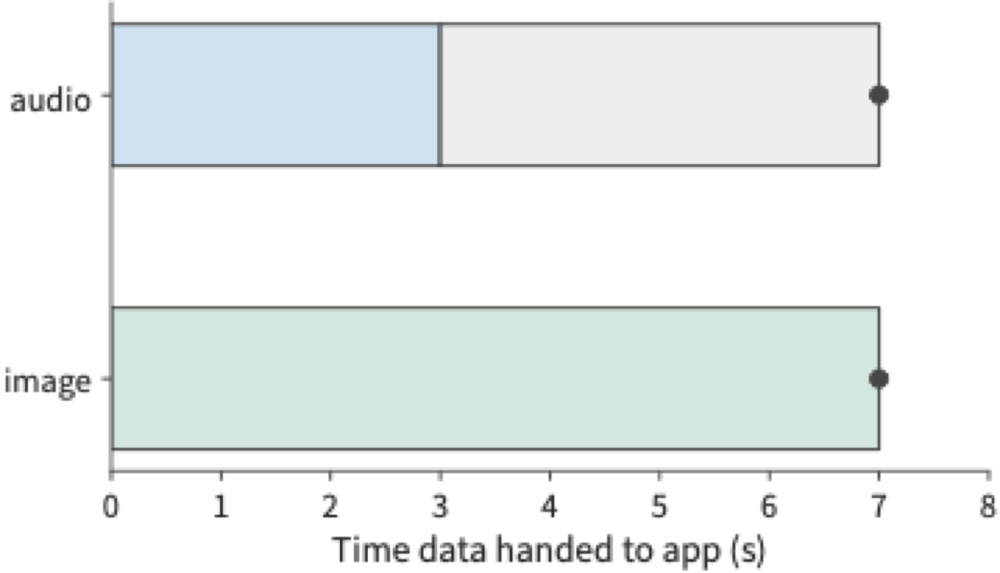
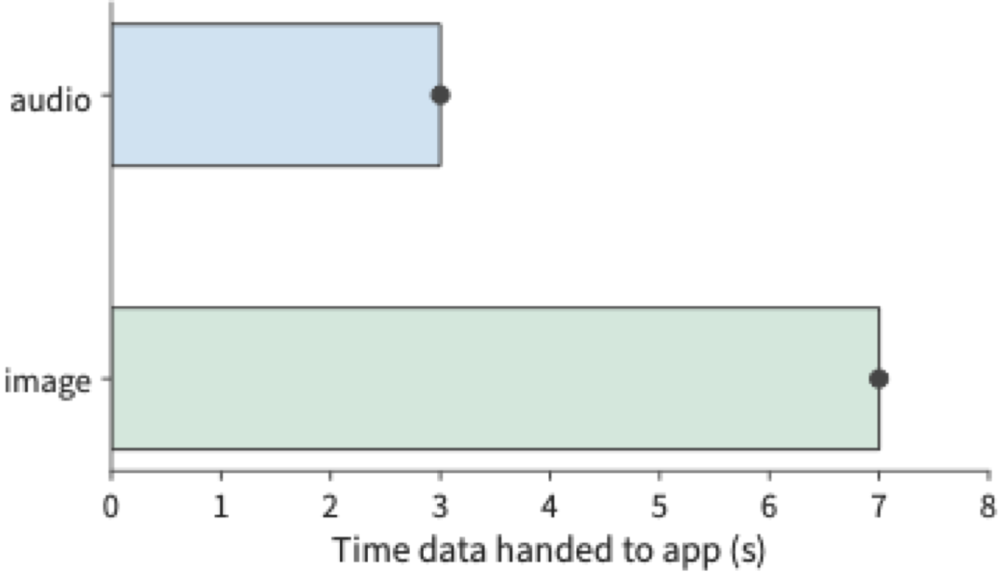
The distinction between whole-connection ordering and per-stream delivery corresponds exactly to the approaches of two real-world protocols. HTTP/2 places multiple streams into a single ordered TCP byte stream, so a gap earlier in the stream blocks the bytes that follow it. QUIC maintains ordering per stream, so bytes that have already arrived contiguously on other streams can be delivered independently.16 This is the same kind of analysis as the recurrence relation for audio playback: a single wait condition covering all the data is split into separate wait conditions per stream, and any stream that already satisfies its condition can deliver data to the application.
These two mechanisms answer "when to send" and "when to hand off to the application," respectively. Section 12.3.5 uses a cross-region speech case to show how these mechanisms affect real requests; Section 12.4 then combines audio's scheduled playback slots with screenshot versioning to discuss whether data handed to the application still has value.20
12.3.5 Case: How Queqiao Accelerates Cross-Region Speech Service¶
Chapters 8 and 9 introduced batching and resource pooling for model serving. Aggregating requests from different regions into a small number of datacenters lets more requests share model replicas and accelerators, reducing the underused capacity that separate deployments would each have to reserve on their own, and makes it easier to fill batches. Centralized deployment therefore has the potential to raise accelerator utilization and lower per-request cost, at the cost of a longer network path for distant users. For example, if a speech model is deployed centrally on the US East Coast, users or access services on the US West Coast must make cross-region calls. Even if the model in the resource pool finishes its computation quickly, the user still has to wait for the request upload and the result to come back.
What is Queqiao, and what problem does it solve? Queqiao is open-source and self-hostable, carrying TCP and UDP traffic between a controlled client and a trusted gateway. An application connects to the client through a local SOCKS5 proxy (a general-purpose proxy protocol for forwarding arbitrary TCP/UDP connections); the client connects to the gateway across the wide-area network, and the gateway forwards the request to the target service. In this kind of inter-datacenter deployment, the client sits on the caller's server and the gateway sits near the remote inference service, so the long-distance link that needs optimization is concentrated between the client and the gateway. The application still calls the original ASR and TTS interfaces; Queqiao is responsible for transporting the request and the result.25
The project's README describes this practical need: the model runs in the United States, and clients are distributed in different places. ASR uploads a few hundred KB of audio and returns a line of recognized text; TTS submits a segment of text and gets back a few hundred KB of audio. The TTS scenario in the README returns the audio all at once after the model finishes — a single burst transfer; the streaming scenario in Section 12.1, by contrast, begins transmission after the first chunk is generated, with reception and playback advancing continuously alongside generation. Even if such short requests could send every byte in a few milliseconds, connection establishment, window growth, and packet-loss recovery can each independently introduce a long-distance round of feedback waiting.
Queqiao's design goal is to reduce this extra waiting, bringing short requests as close as possible to the time actually required for propagation, data sending, and model processing, while also improving how well long flows use the available bandwidth. Queqiao lets multiple application flows share the measurement results and transport state of the client-gateway path, reuses connections, and schedules sending and recovery according to path conditions; forward error correction sends some extra redundant data so the receiver has a chance to recover missing packets without waiting for the next round of retransmission. When interactive flows coexist with large file transfers, send scheduling is also needed to control the interactive flow's wait time. The connection, window, and multiplexing mechanisms discussed in Sections 12.3.1 through 12.3.4 all serve cross-region calls here together. The propagation distance itself still determines the time that must be paid; whether the optimized, complete request can meet the business deadline determines whether centralized deployment is suitable for this task.
Why is a cross-region speech request far slower than the roughly 240-millisecond ideal? This section uses speech tests archived by the author to examine these mechanisms. The actual measured path runs from Guiyang to Irvine in the United States — not the US East-West deployment example used above. Using a fixed audio file of about 355 KB, a link of 333 Mbit/s, a round trip of about 200 ms, and model processing of about 30 ms, timing runs from when the request is initiated to when the result is received. The ideal send time is about 8.5 ms, and adding propagation and processing gives about 238.5 ms. The initial direct call, however, took over a second, while Queqiao took about three hundred milliseconds.
There are two possible explanations for this gap. One attributes the advantage to the transport mechanism itself; the other holds that most of the direct call's time went into connection setup, window growth, and waiting to send. The two explanations make different predictions: if connection setup and send waiting are the main cause, then after thoroughly tuning the direct path, request time should approach the minimum computed earlier from data volume, computation time, and the necessary round trips; if the protocol mechanism itself still confers a substantial advantage, the gap will persist.
Testing this prediction first requires fixing the input. Early tests rotated among eight files of 146–405 KB, but the report only labeled the size of the last request (355 KB); the median labeled with that size actually spanned the whole range. After switching to repeatedly sending the same 354,640-byte file and alternating between the two paths, each request sent the same number of bytes.26 With the data volume fixed, changing connection and send configuration then makes it possible to compare how each affects request time.
After reusing the connection and tuning it, how much of the gap between the two paths remains?
The two sets of results for the fixed file are as follows.
| Connection condition | Median request time, direct path | Median request time, Queqiao | Observed gap |
|---|---|---|---|
| New connection | ~1.19 s | ~0.30 s | Direct path ~3.9x |
| Persistent, tuned connection | ~0.24 s | ~0.24 s | Nearly identical |
With a new connection, the two paths differ by about 0.89 seconds; after reusing the connection and tuning it, both are around 0.24 seconds (Figures 12-21, 12-22).27 Most of the original gap disappears once the baseline configuration changes. This supports the second explanation: connection setup and send behavior were the main contributors to the initial gap. Even with the same protocol, different configurations can produce very different request completion times. The steps in this case follow Section 1.3.4: first compute a lower bound of about 240 ms from propagation, sending, and model processing; then compare it against measurement; and finally use an experiment that changes only the connection condition to determine whether the gap comes from a model overhead or an implementation overhead. Here the gap comes almost entirely from implementation overhead — the lower bound itself was not wrong.
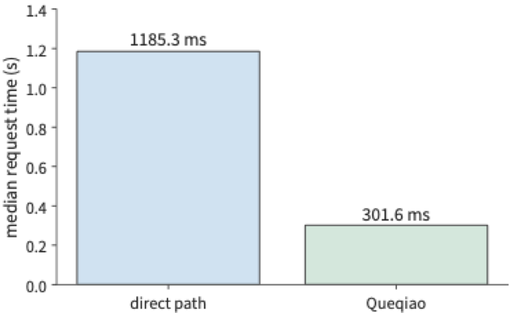
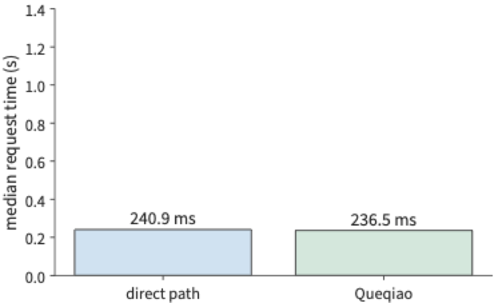
How do single-factor experiments distinguish the effects of connection, window, and send pacing? Connection reuse changes whether a handshake is needed at request start, window size changes how much data can be in flight before an acknowledgment returns, and send pacing changes the idle intervals on the link. Figure 12-23 pairs these three settings with corresponding events: holding the file, path, and other settings fixed, each experiment changes one factor at a time and records both the timing of the affected event and the total request time. The connection experiment compares handshake completion and first-byte send time; the window experiment compares the amount in flight against sending after an ACK arrives; the pacing experiment compares the idle time between successive sends.
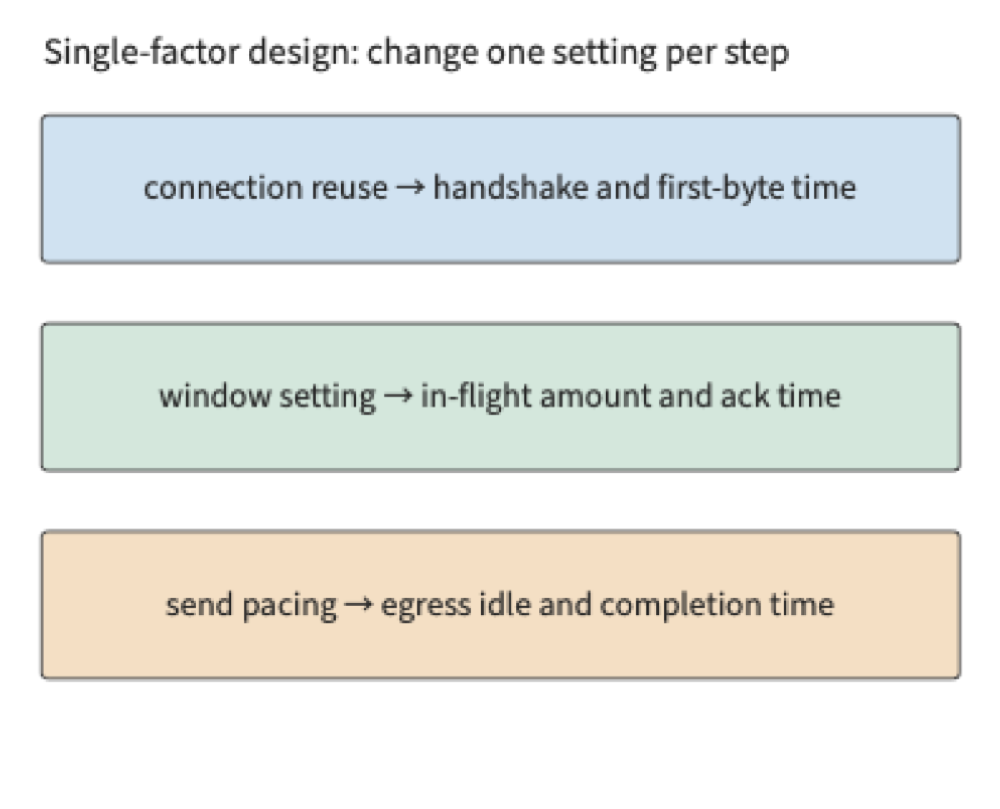
When the window is exhausted, after sending a batch of data the amount in flight hits its cap, the egress goes idle, and sending only resumes once an ACK returns. Enlarging the window can shorten this kind of idle interval; if the request also finishes correspondingly earlier, the send/acknowledgment timeline shows that the reduced total time comes from the window change.
The order in which experiments run also affects the comparison. Alternating between the two paths lets the two requests in a given comparison run close together in time, reducing the effect of network variation on the comparison; RTT during this period was about 197–205 ms, spanning about 8 ms. After tuning, the median request times for the two paths differ by about 4 ms — smaller than the RTT fluctuation over the same period. In this set of experiments, both paths' request times were already close to 240 ms.
Which gives a bigger payoff: reducing network round-trip latency, or speeding up model computation? Once the baseline configuration is tuned, the priorities for further optimization change too. Speeding up the model from 30 ms to 3 ms saves at most 27 ms; reducing RTT from 200 ms to 20 ms can save about 180 ms. As long as the extra preparation and computation time incurred by switching to nearby execution is less than this 180 ms, it will be faster than the original remote path. This is the same comparison method used in Section 12.1: first compute how much waiting time switching servers saves, then subtract the added computation and preparation time.
Beyond request time, playback continuity also needs checking: once audio arrives, the player must play it back continuously. In a separate set of experiments using a silent-output-device callback, the complete PCM was eventually received in full, but the playback callback failed to obtain enough audio samples for a cumulative total of about 0.36–1.44 seconds.28 The request completion time only reflects when the last batch of data arrived; the player, however, must keep reading audio continuously before that point. Total request time and playback stall time describe two different problems.
The generation, arrival, buffering, and reading (by the playback callback) of audio chunks together form the timeline for continuous playback. The recurrence from Section 12.1 gives the moment the buffer first runs dry: if the next chunk has not yet been generated at that point, the wait lies in model processing; if it has been generated but not yet arrived, the wait lies in transmission; if it has arrived but not yet been read, the wait lies in local buffering and scheduling.
This case walks through the entire process from estimation to deployment decision: first compute the ideal completion time, then find the waiting in the execution record, use single-factor experiments to explain the cause, and finally decide whether to keep tuning or switch servers based on how much time remains to be saved. Section 12.4 adds wireless-access contention, fluctuation, and recovery to the analysis; Section 12.5 brings together a complete deployment scheme.
12.4 Interaction and Recovery Under Wireless Variation¶
12.4.1 Shared Spectrum and Uplink-Downlink Contention¶
Section 12.3.4 distinguished "when to send" from "when to hand off to the application." An air interface is the interface through which a device communicates over radio signals. Wireless networks also change the cost of sending itself: uplink data and downlink feedback must take turns occupying the same span of air-interface time. Each exchange, besides sending bytes, must also wait for the channel to be idle, wait for the inter-frame gap, and receive an acknowledgment for that hop. So beyond the application byte count, we also need to count the number of exchanges.
The end-to-end ACK is sent to the remote sender; the Media Access Control (MAC) layer organizes transmission on a single wireless link, and the MAC ACK acknowledges the wireless frame for that hop. The wireless frame carrying the end-to-end ACK must also undergo its own MAC acknowledgment. So even a very short end-to-end ACK still has to wait for the channel to be idle and complete its own hop-level acknowledgment.
Example: how large is the wireless access and acknowledgment overhead for a short ACK frame? Orthogonal frequency-division multiplexing (OFDM) spreads data across multiple mutually orthogonal subcarriers; a PPDU (physical layer protocol data unit) contains the physical-layer preamble, header, and carried data, representing the complete physical-layer content of one wireless transmission; SIFS is the short inter-frame spacing between consecutive exchanges. Take a non-aggregated OFDM reference exchange with a data rate of 54 Mbit/s and a MAC ACK rate of 6 Mbit/s. The data-packet exchange comprises a 34 μs access wait, a 208 μs data frame, a 16 μs SIFS, and a 44 μs MAC ACK, totaling 302 μs. When carrying an end-to-end ACK, the data frame shrinks to 40 μs while the other three terms stay the same, totaling 134 μs.21
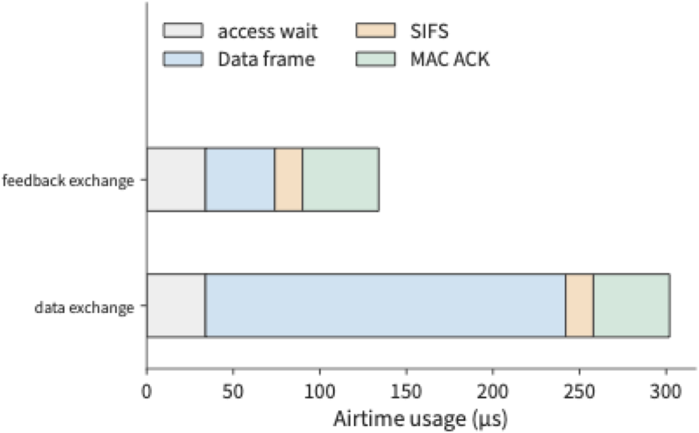
In Figure 12-24, both exchanges share a fixed overhead of \(34+16+44=94\) μs. The data frame's send time shrinks from 208 μs to 40 μs — a reduction of about 80% — yet the total exchange time shrinks by only about 56%. The larger the fixed portion, the smaller the benefit from further shortening the payload; merging multiple small messages into a single send and reducing the number of exchanges is a more direct way to cut overhead.
Still sending a 30 MB image and a 5 MB clip, under this wireless configuration, both data exchanges and feedback exchanges number 30,800 each, and the cumulative air-interface occupancy time is about
Keeping the data and recovery trace unchanged, halving the number of end-to-end ACKs frees up about \(15400\times134\ \mathrm{\mu s}\approx2.1\) seconds of air-interface time. As Section 12.3.2 already showed, however, increased feedback delay also increases window stalls. So each packet's send and acknowledgment time must be recomputed: reducing ACKs frees air-interface time, but waiting longer for acknowledgment may also delay subsequent sends. The two effects together determine when the complete request finishes.
Real protocols already include mechanisms designed along these lines. TACK is a feedback mechanism that reduces wireless acknowledgment overhead. TACK separates routine cumulative acknowledgment from events requiring immediate feedback: the former is merged and sent together to reduce the number of exchanges, while the latter is returned immediately so the sender can proceed or retransmit lost data as soon as possible.22 This division of labor simultaneously reduces the overhead of sending acknowledgment messages and the time spent waiting for feedback.
12.4.2 Service Deadlines, Stale Data, and Cancellation¶
The player in Section 12.1 waits for missing chunks in order to preserve the full content; another kind of player instead plays back on a fixed clock, and audio chunks that arrive late are simply no longer used for their originally scheduled playback slot. The former turns network delay into a stall; the latter causes part of the sound to be missing. The task's quality requirements determine which playback rule to adopt.
For example, suppose eight audio chunks, each 20 ms long, are scheduled to play continuously starting at second 0.4, for a total of 0.16 seconds. When these chunks share a link with a large image, under FIFO all the chunks eventually arrive but every one of them misses its scheduled playback moment; when media is prioritized, all eight arrive on time.23 In both cases the total number of bytes eventually received is the same, but the amount of sound available on time is zero versus 0.16 seconds, respectively. Only by tallying content played on time can scheduling reflect how much sound the user actually heard.
Late-arriving data misses its scheduled playback slot, whereas cancellation makes not-yet-played data immediately worthless. If the player's pending-playback queue already holds three 20 ms audio chunks, even if the remote end stops generating immediately, local playback can continue for another 60 ms. If the control message takes 100 ms to reach the server, the remote end will still generate new chunks before the message arrives. Cancellation therefore splits into two parallel paths (Figure 12-25): the local side clears its pending-playback buffer, while the remote side stops generating and sending further audio only after the control message arrives. The former determines when the user stops hearing sound; the latter determines when resource consumption actually stops.
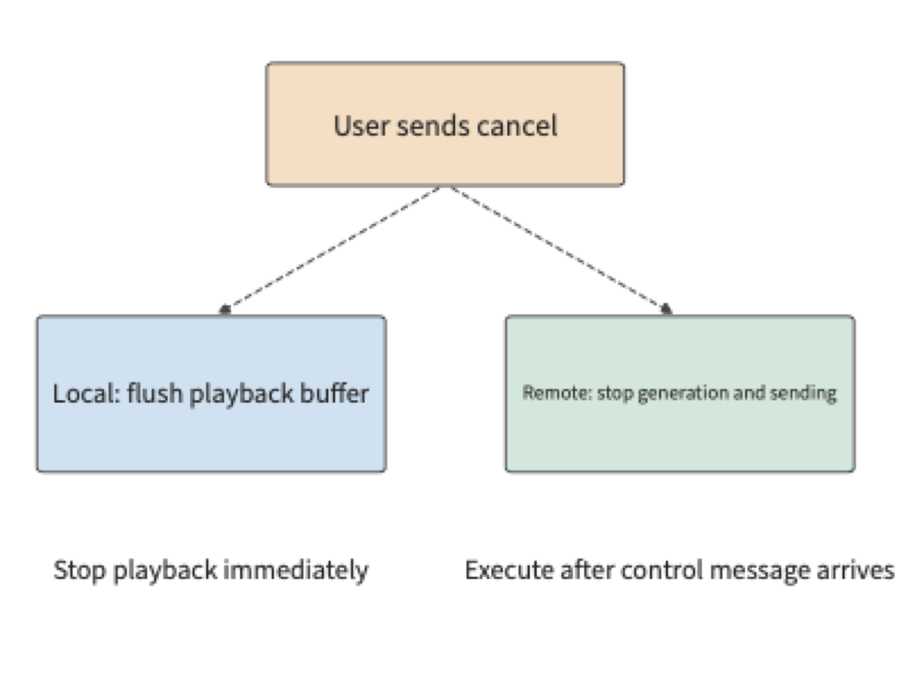
After audio is canceled, only the not-yet-played data is discarded; a screenshot agent's action, by contrast, changes the environment once submitted. When a response is lost, a retry should query the result associated with the original operation ID; clicking again would turn a communication retry into a second business operation. Saving the operation's result lets execution resume from where it left off once the network recovers, avoiding duplicate operations.
12.4.3 Dual-Path Selection, Traffic Splitting, and Failover¶
The preceding analysis considered only a single access path; terminals are often connected to two paths at once. Wi-Fi and cellular networks provide two access paths. Traffic splitting hands different portions of the data to different paths, aiming to use both resources at once; replication hands the same data to both paths, aiming to obtain a valid result sooner. These two methods differ in data volume and completion condition and must be computed separately.
Example: how should dual paths split image data to shorten transfer time? Two independent constant-rate paths run at 20 and 10 Mbit/s, respectively; a fraction \(x\) is assigned to the fast path and the rest to the slow path. Completion requires both parts to be done, so
If one path finishes first, some of its bytes could be shifted to it from the other path, letting the part that would otherwise finish later finish sooner. So the optimal split makes both paths finish at the same time, i.e., \(x=B_1/(B_1+B_2)\). Sending 20 MB on the fast path and 10 MB on the slow path each take 8 seconds — 4 seconds less than the 12 seconds required if only the fast path were used (Figure 12-26).
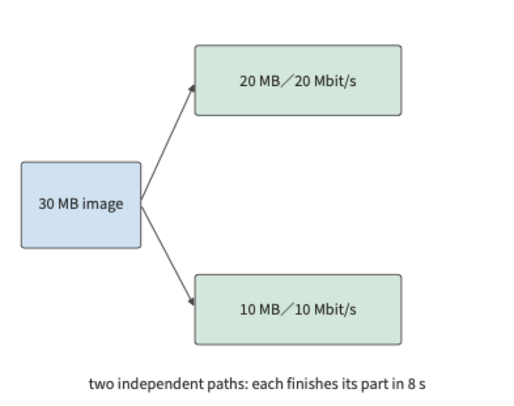
If the two paths merge into a shared 24 Mbit/s egress, both access paths can still send simultaneously and each still takes 8 seconds, but all the data must pass through that egress, and transferring 30 MB through it takes at least 10 seconds. The bottleneck thus shifts to the shared egress. Further increasing the access rate would only make more data queue up waiting to pass through that egress.
In Figure 12-27, the two lines converge again at the egress. This convergence point both explains why the rates of the two access paths cannot simply be added together, and raises another question: if the device hosting the egress fails, can the other access path keep transferring on its own?
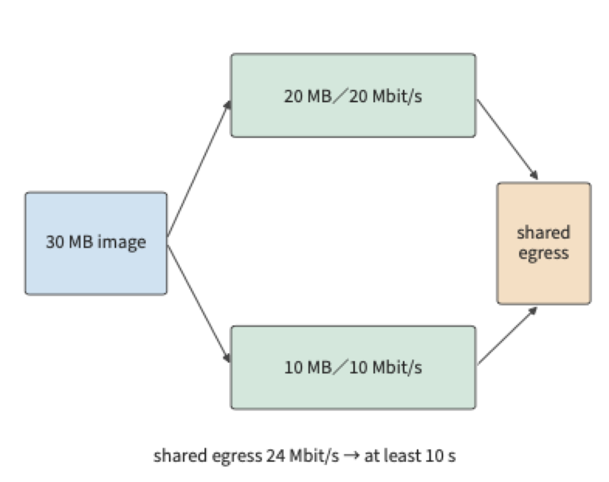
If we want the same data to still arrive after one path disconnects, replication can be used, and we should check where the two copies would be likely to fail together. Let \(q\) be the probability that the shared endpoint fails; when the endpoint is functioning normally, the two access paths fail independently with probabilities \(p_1,p_2\). Failure consists of endpoint failure, or the endpoint functioning normally but both access paths failing — two mutually exclusive events whose probabilities add to give
Taking \(p_1=0.1,p_2=0.05\), the probability that both access paths fail simultaneously is 0.5%; adding \(q=0.02\) brings the overall total to about 2.5%. Of that, 2 percentage points come directly from the shared endpoint. Even making both access paths perfectly reliable individually, the overall failure probability would still be 2%; only placing service replicas in different failure domains would reduce this term.
Once the shared failure is avoided, replication still costs extra bandwidth. Take eight 640-byte audio chunks as an example: one copy is 5,120 bytes, and full duplication is 10,240 bytes. The receiver deduplicates by chunk ID, and the first complete copy to arrive goes to the player, while the later copy is discarded. Sending an extra copy of the data makes it possible to use whichever path's result arrives first; but if the two paths share the same egress, the duplicate data also consumes bandwidth that other tasks need.24
Traffic splitting, replication, and convergence points are often implemented in real systems by a protocol or an access proxy. Multipath TCP (MPTCP) organizes TCP subflows traveling over different paths within a single logical connection, and an access proxy can converge these paths between the terminal and an ordinary server. Huawei Link Turbo's multi-network collaboration practice likewise uses the state of different access networks to choose how to send.22 The proxy's placement simultaneously affects shared capacity, propagation, and failure domain, making it a computation-and-transport node within the deployment model.
12.5 From Edge-Cloud Division of Labor to Complete Deployment¶
12.5.1 Region, Data, and Service Location¶
Continue analyzing the 30-round screenshot task from Section 12.1. The first ten rounds are complete, and we must choose an execution location for the remaining twenty rounds; from this moment on, the task must finish within 45 seconds. Whichever scheme is chosen, the time already spent is the same, so what's being compared is the remaining work. The original service takes 3.5 seconds per round, so continuing with it would need 70 seconds — an execution scheme change is required.
Still using 0.8 MB of screenshot per round, 0.3 seconds of terminal work, and the original cloud path's uplink of 6.4 Mbit/s and RTT of 0.2 seconds, compare three execution locations: the edge is the phone from Section 12.1.5, the nearby workstation holds an RTX PRO 6000 Blackwell Workstation Edition card, and the cloud region uses an H100 SXM. All three run the same Qwen3-8B q4_0 weights and 8K context, and each round generates the same 45 tokens as in Section 12.1.5, so task quality is identical across all three. Per-round model time follows the convention of Section 12.1.5, taking the decode read lower bound: 45 steps, each reading 5.47 GB, divided by the device's memory bandwidth. When the new service takes over, it must first run a prefill on the 8K context left by the previous ten rounds — the "one-time preparation" in the table — computed as 133.6 TFLOPs of matrix work divided by the BF16 dense peak; the phone has no citable matrix peak, so its preparation is recorded as 0, a choice that only makes the edge look faster than it is. First assume conditions with no queueing, no failures, and zero send time for control replies.31
| Execution location | Device | One-time preparation | Per-round model | Uplink | Per-round round-trip propagation | Screenshot destination | 20-round energy |
|---|---|---|---|---|---|---|---|
| Edge | Phone, 84.8 GB/s | 0 s | 2.90 s | No upload needed | 0 s | Stays on device | 518–680 J |
| Nearby workstation | RTX PRO 6000, 1,792 GB/s, 600 W | 0.27 s | 0.137 s | 80 Mbit/s | 0.02 s | Sent to nearby workstation | ~1.81 kJ |
| Cloud region | H100 SXM, 3,350 GB/s, 700 W | 0.14 s | 0.073 s | 6.4 Mbit/s | 0.20 s | Sent to cloud region | ~1.12 kJ |
Cost is measured in energy. For the two GPUs, energy is computed as the board's rated power multiplied by busy time, where busy time is one-time preparation plus twenty rounds of model computation; rated power is an upper bound, so these two rows are upper bounds as well. For the phone, we use the MELTing Point measured figure of 0.576–0.756 J per token, for a total of 900 tokens across twenty rounds.3 Network energy consumed by upload and propagation is not counted.
Before comparing time and cost, the data residency constraint must first be satisfied — that is, data may only be stored and processed on specified devices or in specified regions. In the table, the edge row's raw screenshots never leave the device; the nearby-workstation and cloud-region rows must each transmit the 0.8 MB raw screenshot off the device every round. If the screenshots contain content that must not leave the device or must not cross borders, these two rows are excluded before the comparison even begins; the time and cost comparison below assumes upload is permitted.
Further dividing the cloud into different regions still requires comparing these same times and costs. Under Regionless service (where the platform chooses the cloud region for a request, rather than the application binding to a fixed region), the application specifies the task, quality requirements, and completion deadline, and the platform chooses the deployment region.29 The platform still has to compare the actual overhead of each scheme: server distance affects propagation time, caching affects the amount of recomputation needed, and cross-region transfer affects data transfer cost.
12.5.2 Joint comparison of deadline, cost, and recovery¶
Example: how do state migration and the number of remaining interaction rounds change the edge-cloud deployment choice? The time for the remaining twenty rounds is
The H100's memory bandwidth is 1.87 times that of the RTX PRO 6000, so the cloud's per-round model computation takes about 0.064 seconds less than the nearby workstation; over twenty rounds that saves about 1.3 seconds, plus another 0.13 seconds on preparation. But each upload round costs 0.92 seconds more and propagation adds 0.18 seconds more, adding up to 22 extra seconds of waiting over twenty rounds. On balance, the cloud path is actually about 20.6 seconds slower. Breaking the time difference apart shows how a faster model can lose its advantage to per-round communication: decode per round takes only tens to just over a hundred milliseconds, far less than the per-round communication time.
Figures 12-28 through 12-30 summarize the per-stage time breakdown of the complete task under the three deployment modes. The cloud's green computation segment is shorter, but its blue upload segment is longer; the segments accumulate in sequence, and their sum determines the task completion time shown at the end of each bar.
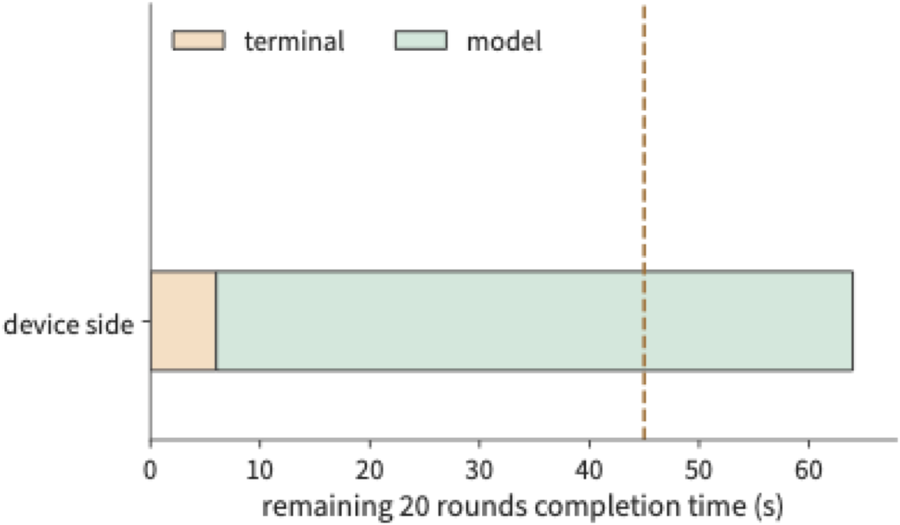
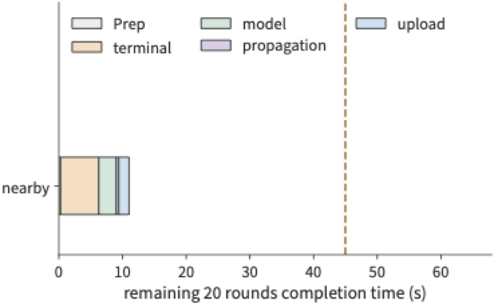
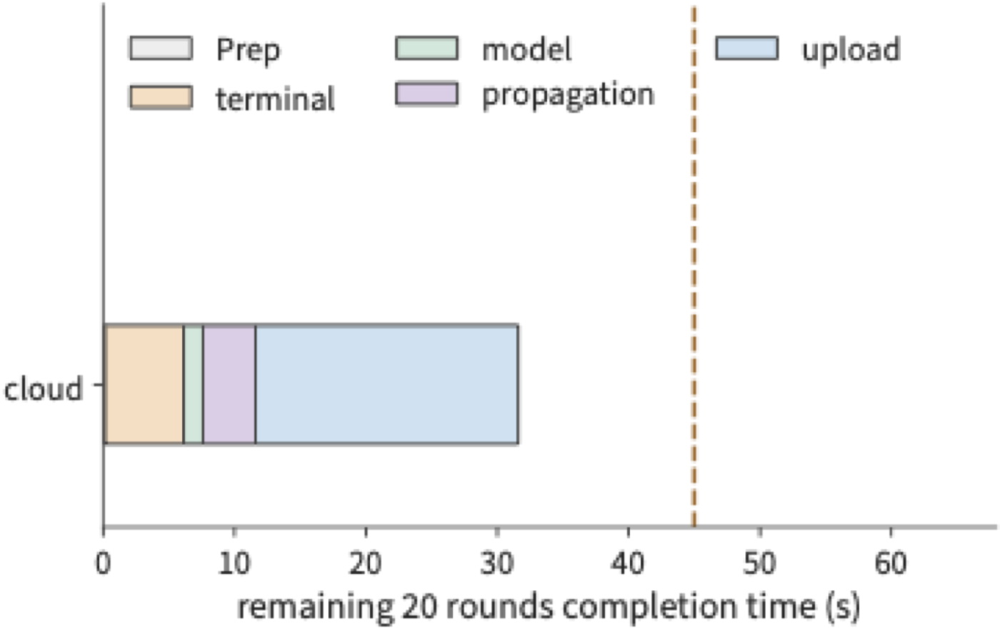
The 45-second deadline first eliminates the local device: it has the lowest energy consumption, but needs 64.0 seconds. Both the nearby workstation and the cloud finish on time, so we next compare energy consumption: the cloud uses about 1.12 kJ, the nearby workstation about 1.81 kJ. The H100's rated power is higher than the RTX PRO 6000's, but its per-round busy time is only a bit more than half as long, so its energy consumption is actually lower. Among the schemes that finish on time, the cloud scheme therefore has the lowest energy consumption.
The local-device row still needs to be checked against battery capacity, following Section 12.1.5. The 518–680 J for twenty rounds shown in the table needs to be converted into a fraction of one charge. The iPhone 16 Pro's spec page only gives a maximum video playback time of 27 hours, with no battery watt-hour figure, so we instead use the MELTing Point measurement for conversion: one charge can complete about 490–590 prompts, and 20 rounds correspond to 20 prompts, or about 3.4%–4.1% of one charge.3 Battery capacity does not rule out the local-device scheme; what rules it out is the 64.0-second completion time.
The cloud scheme's dependence on uplink rate can be expressed quantitatively. Changing only the uplink rate \(b\) of the cloud path, in Mbit/s, while holding other parameters fixed, the cloud completion time is
The 11.6 seconds comes from one preparation step plus twenty rounds of non-upload work; 128 Mbit is the total upload volume for twenty screenshots. Meeting the deadline requires \(b\ge128/33.4\approx3.8\) Mbit/s (Figure 12-31). But it can never beat the nearby workstation: even with instantaneous upload, the cloud still needs 11.6 seconds, still slower than the nearby workstation's 11.0 seconds. The reason is the 0.2-second round-trip propagation per round: it exceeds the nearby workstation's combined per-round propagation and upload time (0.1 seconds) by 0.1 seconds, which is more than the roughly 0.064 seconds the H100 saves per round on model time.
This "can't catch up" conclusion depends on how the read lower bound is defined. Experiment 8-1 measured 25.83 ms per step for batch 1, 8K decode on the RTX PRO 6000, about 2.83 times the read lower bound of 9.12 ms, with the extra time mainly coming from fixed per-step overhead. Scaling the model time of both GPUs by this same factor gives 16.04 seconds for the nearby workstation and 14.29 seconds for the cloud excluding upload, a difference of 1.75 seconds; the cloud only becomes faster once the uplink rate exceeds \(128/1.75\approx73\) Mbit/s.31
![Figure 12-31: Cloud path uplink changes the deployment choice for the complete task. Each of the remaining 20 rounds uploads 0.8 MB; cloud preparation takes 0.14 seconds, and the rest of each round's work totals about 0.57 seconds, so total time is 11.6+128/b seconds; the nearby workstation takes 11.0 seconds, with a 45-second deadline. This example holds the model, processing time, and other network parameters fixed, and ignores queueing and failures. From about 3.8 Mbit/s upward the cloud scheme can meet the deadline; however high the uplink rate goes, the cloud never drops below 11.6 seconds, always remaining slower than the nearby workstation.](images/figure-12-15-deployment.png)
Near the deadline, we also need to calculate how much margin remains for extra overhead. At the original uplink rate of 6.4 Mbit/s, the cloud task finishes about 13.4 seconds ahead of the deadline; if the uplink drops to 4 Mbit/s, the time becomes about 43.6 seconds, leaving only about 1.4 seconds of margin; at 3.5 Mbit/s, it becomes about 48.2 seconds, already over the deadline. If 99% of tasks must finish on time, we need to analyze the probability distribution of task completion time. Since the per-round rate \(b_i\) can vary, the total time including upload should be written as
Assuming each round's rate is constant during its upload, an average rate of 8 Mbit/s achieved by ten rounds at 6 Mbit/s and ten rounds at 10 Mbit/s still yields a task time of about 28.7 seconds, slower than the 27.6 seconds obtained at a constant 8 Mbit/s throughout. Send time is inversely proportional to rate, so the extra waiting incurred by the slow rounds exceeds the waiting saved by the fast rounds. The platform should judge whether \(P(T\le45\ \mathrm{s})\ge0.99\) is satisfied based on the distribution of upload times across the whole task, and should also account for the fact that when the network stays slow for a stretch, several adjacent rounds are affected together.
The deployment choice above is dominated by screenshot upload time. For a text-based task with smaller input and more repeated prefixes, the optimization focus shifts to computation reuse. Retaining session state reduces this repeated computation. Consider a text-based agent session: resending the prefix every round totals about 66 KB, while retaining state reduces this to about 10 KB sent, with replies each about 2.5 KB. At 333 Mbit/s, sending about 56 KB less only saves 1.3 ms.30 Compared with the 16 MB screenshot upload, the main benefit here comes from avoiding repeated prefix computation.
The matrix computation for the same session drops from about \(3.0\times10^{14}\) to \(6.0\times10^{13}\) FLOPs. At 989.4 TFLOP/s on a cloud H100 SXM, retaining state saves about 0.239 GPU-seconds. The roughly 465 MB of saved state occupies GPU memory continuously; converting by its share of the H100's 80 GB memory, every second of storage is equivalent to occupying \(0.465/80\approx0.0058\) GPU-seconds. Dividing the two: after about 41 seconds of holding the saved state, the memory it occupies offsets the computation saved this time. This break-even calculation is the same as the migration-time comparison in Section 12.2.3: the benefit of reuse must cover the cost of saving or moving the state.
Saving state reduces not only repeated computation during normal execution but also redo work after a failure. Taking the chosen cloud scheme as an example, we compare the cost of the same disconnection event under two different progress-saving approaches. Completing one round on the cloud takes about 1.57 seconds. Suppose round ten has finished executing but its confirmation has not yet returned when the connection drops, and reconnecting takes 1 second. If the progress of the first nine rounds has already been committed, only the unconfirmed round ten needs to be redone, adding about 2.57 seconds, so the task grows from 31.6 to 34.2 seconds; if all ten rounds must be redone, it adds about 16.7 seconds, making the task 48.3 seconds, over the deadline. Using the same server throughout, whether progress can be retained determines whether the task finishes on time. The nearby workstation only needs about 0.54 seconds per round, so even losing ten rounds of progress costs only 17.4 seconds; a scheme with more deadline margin is more tolerant of failures.
Figures 12-32 and 12-33 mark the difference between the two recovery approaches: after the same disconnection event, one redoes only the last round, the other redoes the preceding ten rounds. How large the recovery overhead is depends first on which results were already reliably saved.
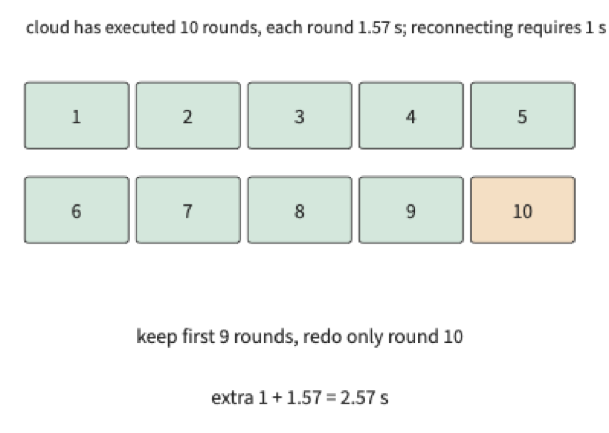
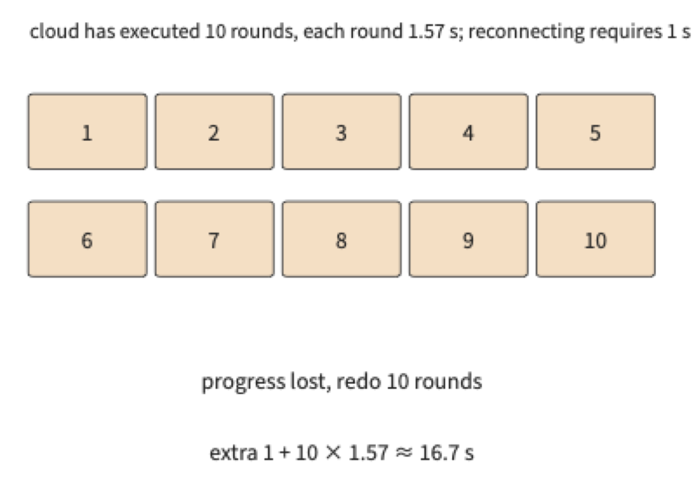
The comparison above concerns a single disconnection event that has already occurred. To estimate the average cost over many tasks, we must also factor in the probability that failure occurs at all: retries also add cost. If each attempt is independent with success probability \(p\), and a failure triggers a full retry costing \(C\) each time, the expected cost satisfies \(E=C+(1-p)E\), so \(E=C/p\). A 99% success rate corresponds to about \(1.01C\), and 80% corresponds to \(1.25C\). Saving progress can turn a full retry into a local redo, directly reducing the time and cost added by each failure.
12.5.3 When a deployment scheme needs to change¶
Combining the time, energy, and recovery comparisons from Section 12.5.2, this example should move the remaining twenty rounds to the cloud: 31.6 seconds to complete, at about 1.12 kJ of energy. Compared with the 70 seconds of continuing to use the original service, this saves about 38.4 seconds. The terminal continues capturing and executing operations, the cloud's H100 handles model judgment, and each round only transmits the screenshot and the control result.
This decision comes from an item-by-item comparison of the three deployment schemes: the local device is eliminated first for exceeding the deadline, while both the nearby workstation and the cloud finish on time, with the cloud consuming less energy. The compression, feature, and state analyses of Sections 12.1–12.2 point to further improvements: compressing screenshots can reduce upload time, uploading full features increases transfer time, and retaining already-committed progress reduces repeated work after recovery.
| Change in conditions | Result | Decision |
|---|---|---|
| Original cloud path uplink rate is 6.4 Mbit/s | Cloud: 31.6 s, about 1.12 kJ; nearby: 11.0 s, about 1.81 kJ | Both finish on time; use the cloud, which has lower energy consumption |
| Cloud path uplink rate drops to 3.5 Mbit/s | Cloud: about 48.2 s | Cloud exceeds the deadline; switch to the nearby workstation |
| Cloud path uplink rate at any level | Cloud never below 11.6 s | Always slower than the nearby workstation; tighter deadlines can only be met by the nearby workstation |
| One disconnection on the cloud, retaining progress through round nine and redoing round ten | 34.2 s | Still within the deadline |
| Same disconnection but losing ten rounds of progress | 48.3 s | Exceeds the deadline; needs better progress saving, or should switch to the nearby workstation |
Switching devices mid-task also requires migrating session state. The 64 MiB session from Section 12.2 needs about 7.7 seconds of preparation, and each subsequent round is 0.4 seconds faster; over 20 rounds, this nets only about 0.3 seconds of savings. If a bandwidth improvement lasts only ten rounds before reverting, this migration would net a loss of about 3.7 seconds. The platform should therefore weigh the expected sustained benefit against the switching cost together: state should only be migrated when the expected time saved is enough to cover the migration preparation with margin left for extra overhead. Staying on the same device for a while avoids repeatedly migrating state near a critical bandwidth threshold.
Chapter 1 used capacity, compute, and read time to judge whether an accelerator can hold a model; this chapter further analyzes communication, execution order, and the recovery process to judge whether a deployment scheme can complete a task on time. Choosing a deployment scheme requires answering, in order: what work the task involves, which steps must wait, what extra overhead actual execution adds, and which scheme is more suitable once conditions change.
12.5.4 System adjustment after resource conditions change¶
The deployment comparisons above held the model fixed and changed only the execution location; conversely, holding the task workflow fixed and only accelerating the model also yields limited benefit for the complete task. Suppose that in one fixed trajectory, model execution totals 8 seconds, and non-overlappable tool and network work totals 2 seconds. Even accelerating the model tenfold overall, the task can only drop from 10 seconds to 2.8 seconds, a speedup of about 3.57;32 as model time approaches zero, the lower bound remains 2 seconds (Figure 12-34).
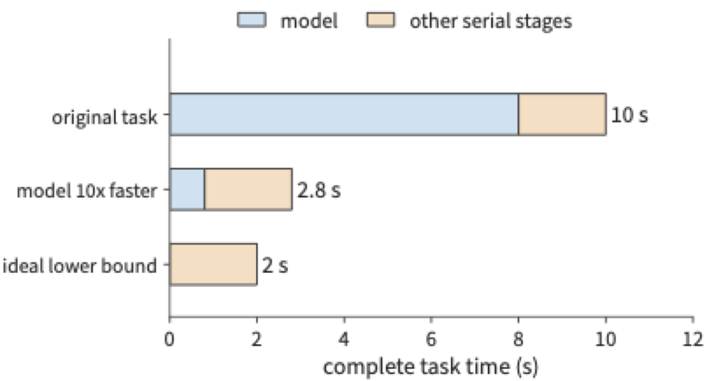
To further shorten the remaining two seconds requires changing the system organization. Moving execution locally can reduce network round trips; retaining the environment can reduce creation waiting. But the local devices and residency space this requires enter a new cost budget. The deployment example in Section 12.5.2 already gives the comparison method: first find schemes that meet the quality and deadline requirements, then compare the total cost of each scheme that completes the task.
The same idea also appears in model design: the change from DeepSeek V4 to V4.1 is an analogous adjustment on the model side. Cross-layer sharing reduces redundant storage of global KV, letting the model save history at a finer granularity; CED reduces the work of repeatedly passing through the decoder during the input stage, and cache recovery shortens the path for restarting a multi-turn session.33 These changes act respectively on capacity, input computation, and recovery waiting, and can be entered into the same task's budget item by item.
From on-chip storage to edge-cloud deployment, design choices consistently depend on understanding the complete execution process. Attention's reduction structure lets intermediate matrices be processed in blocks; repeated model structure lets execution plans be reused; prefix and branch relationships let context be shared; and tool waiting provides a window for state swap-out and environment preparation. Each improvement uses information about the model or the task to guide design at other levels, rearranging where data is stored, how computation is divided, and how handoffs happen.
Exercises¶
The exercises progress from computation, to changing conditions, to explaining mechanisms. 12-2, 12-3, and 12-7 are core exercises. Unless otherwise noted, values follow the teaching conditions in the main text.
12-1 Transmission and computation budget for image enhancement [extension, ★].
(a) For uplink rates of 10, 20, and 100 Mbit/s, calculate the completion time under three schemes: the original scheme, increasing image processing speed to ten times the original, and halving the input size. Input compression still adds 0.15 seconds of codec time.
(b) Find the uplink rate at which the transmission time saved by compression exactly equals the added codec time. Then, holding the original image size and 20 Mbit/s uplink rate fixed: if only 0.2 seconds of the original 0.3-second processing time can be accelerated, and this portion's execution speed is increased tenfold, what is the total task time?
(c) Divide the image into three independently processable blocks and diagram the overlap of upload, processing, and return transmission. Mark the step that limits any further reduction in task time.
12-2 Can screenshot compression's transmission savings offset the extra interaction it causes [core, ★].
(a) Compress each round's screenshot from 0.8 MB to 0.2 MB, adding 30 ms of encoding time per round. Recalculate how much total time is saved over a 30-round screenshot task.
(b) Is the task still faster if compression requires 38 rounds? Find the maximum number of rounds for which the compressed scheme remains faster than the 30-round original-image scheme.
(c) Increase the per-round RTT by 100 ms, and separately calculate the total time for the original-image 30-round scheme and the compressed-image 38-round scheme. Explain why the same RTT change produces different increments in task time.
(d) Design record fields for screenshot version and operation number, explaining how to distinguish correction rounds caused by compression from wasted rounds caused by stale state.
12-3 How do visual encoding location and state migration affect interaction time [core, ★].
(a) One image is 0.8 MB; after encoding it yields a BF16 feature tensor of shape \([400,10240]\), with an uplink bandwidth of 6.4 Mbit/s. Visual encoding requires 1.31 TFLOPs of matrix computation; encode locally on an RTX 4090 and remotely on an H100 SXM, using their BF16 dense peaks (165.2, 989.4 TFLOP/s) to find the encoding time lower bound. Compare the total time of encoding locally and uploading features versus uploading the original image and encoding remotely.
(b) Change the link to a single 400 Gbit/s ConnectX-7 port (50 GB/s per direction), and using direct upload of the original image as the baseline, find how much more transmission time uploading visual features takes; compare this against the encoding time difference between the two cards in (a) to determine which factor decides the encoder's location in this case.
(c) Migration requires transferring 64 MiB of state at 80 Mbit/s, plus 1 second of recovery; after migration, each round's execution time shortens by 0.4 seconds. Find the net time saved for 10, 20, and 40 remaining rounds respectively. If recovery time increases by another 1 second, how many more rounds at minimum must be executed to recoup the migration cost?
(d) Explain, after saving images, visual features, and language KV respectively, from where recomputation should resume; explain how already-committed operation results enter the recovery process.
12-4 Connection reuse and multiflow transmission [extension, ★].
(a) RTT is 200 ms, the task has 30 rounds total, and each new connection requires two extra round trips. Calculate the time difference between establishing a new connection each round and reusing a connection throughout.
(b) Separately calculate the total bytes transmitted for image, headers, and ACKs under immediate acknowledgment versus aggregated ACK schemes, and explain why fewer bytes actually transmitted can still result in longer request completion time.
(c) Compare send priority against the per-stream delivery in Figure 12-20: point out what changes in resource usage periods and waiting dependencies in each case.
(d) Design a set of controlled experiments that change only the connection reuse method while holding other conditions fixed, listing the start/end events and the intermediate events used to explain the time changes.
12-5 ACK frequency and radio interface efficiency [extension, ★].
(a) One data frame exchange takes 302 μs, and one acknowledgment frame exchange takes 134 μs. 30,800 data frame exchanges occur in total, originally each acknowledged individually. After halving the number of ACKs, how much radio interface time is freed up?
(b) Diagram the timeline of the sender pausing while waiting for an aggregated ACK, and explain the relationship between freeing radio time and early delivery.
(c) PCM playback requires a rate of 256 kbit/s, the actual receive rate is 130 kbit/s, and the initial buffer is 60 ms; find the depletion time. Holding the receive rate and 60 ms initial audio duration fixed, change the sample rate from 16 kHz to 24 kHz and find the new depletion time.
12-6 Traffic splitting and backup across dual paths [extension, ★].
(a) 30 MB is split across two paths at 20 and 10 Mbit/s; derive the split ratio and time needed for both paths to finish simultaneously.
(b) Add a shared 24 Mbit/s egress link, find the new lower bound on transfer time, and identify which segment's bandwidth increase would lower this bound.
(c) The two access paths have failure probabilities of 0.1 and 0.05 respectively, and the shared endpoint has a failure probability of 0.02. Using the independent-failure assumption from the main text, find the probability that the task still fails after sending one full copy over each path; what is this probability once both access paths are fully reliable?
(d) Duplicate each of eight audio blocks once, each block being 640 bytes, find the additional bytes transmitted, and explain how the receiver avoids duplicate playback.
12-7 Using single-factor experiments to distinguish connection setup, window size, and transmission delay [core, ★★].
(a) Calculate the ratio of median times for the direct path versus the Queqiao path in the two experiment groups—new connection each time versus tuned persistent connection—and explain what prediction the explanation "the main gap comes from connection setup and send waiting" implies.
(b) With data volume about 355 KB, transmission rate 333 Mbit/s, RTT 200 ms, and processing time 30 ms, find the ideal completion time. Compare against the initially measured time of about one second, and estimate how much waiting time still needs explaining.
(c) Design a single-factor experiment on window size, explaining how to alternate between different window configurations, and what in-flight data volume, ACK behavior, and send timing should be observed to support the explanation "the window limits transmission speed."
(d) Using the accompanying audio recordings, plot the timing of a block from generation through playback, explaining how to distinguish delayed generation, transmission delay, and local scheduling wait.
12-8 How do uplink bandwidth and failure recovery change the time and energy of cross-region deployment [extension, ★★].
(a) Recalculate the time and energy for the remaining twenty-round task under the three deployment schemes, then find the uplink bandwidth the cloud needs to finish on time, and explain why the cloud can never catch up with the nearby workstation no matter how high the uplink rate goes.
(b) Change to ten remaining rounds with a 23-second deadline, and choose the scheme that finishes on time with the lowest energy consumption; then tighten the deadline to 15 seconds and choose again.
(c) In a twenty-round interaction, ten rounds have an uplink rate of 6 Mbit/s and the other ten have 10 Mbit/s; find the cloud's total time, compare it against a constant 8 Mbit/s, and explain the difference.
(d) For a ten-round task with a 23-second deadline, suppose round eight has just finished executing when the connection drops, and reconnecting takes 2 seconds. Consider two recovery cases: progress through round seven has been retained, requiring only round eight to be redone; or all progress through round eight is lost, requiring a full redo. Calculate the time needed to complete the remaining work in each case, and the total task time.
This exercise assumes only that the remote service experiences a disconnection; the local-device scheme still executes normally. The remote service retains its running state during the disconnection and continues using it once the connection is restored, so no re-preparation is needed; task progress is recovered according to the two cases above. Redone rounds must have their model energy counted again. Choose again the scheme that meets the deadline with the lowest energy consumption.
12-9 Bandwidth, capacity, and energy budget for local devices [extension, ★].
(a) Four x16 LPDDR5X channels at 10.6 Gbit/s per pin give what total bandwidth? Then find the per-step time lower bound and the token/s ceiling for a Qwen3-8B BF16 single-request 8K decode (reading 15.14 GB of weights and 1.21 GB of KV per step).
(b) After quantizing weights to q4_0 (every 32 values going from 64 bytes to 18 bytes), recalculate the per-step lower bound and token/s ceiling; on a phone with 12 GB of memory and 4 GB reserved, find the remaining space after subtracting weights, the number of 8K requests that fit, and the maximum context length in tokens for a single request.
(c) Using 0.576–0.756 J per token and a sustained power ceiling of 13.8 W, find the token/s ceiling implied by power alone; compare it against the BF16 and q4_0 bandwidth ceilings, and identify which constraint binds first.
12-10 Packet loss, retransmission, and coding redundancy [extension, ★★].
(a) With MSS 1,448 bytes and RTT 0.2 s, find the Mathis upper bound at packet loss rates of 14% and 3.6%, and the time needed to send 354,640 bytes alone under each bound.
(b) 245 packets are each independently lost with probability 14%. Find the expected number lost. Suppose each round uses one RTT for ideal selective retransmission, and retransmitted packets are again lost with probability \(p\), so the number of rounds needed per packet follows a geometric distribution with success rate \(1-p\); the probability that all 245 packets arrive within \(n\) rounds is \((1-p^n)^{245}\). The serial budget is 238.5 ms, with each additional round adding one RTT; find the expected completion time, then take the 99th percentile of the round-count distribution to get the p99.
(c) At a 99.9% success rate, how many repair packets are needed and what redundancy ratio results, for each of the two loss rates? Find the completion time including this redundancy, and compare it against the corresponding retransmission p99.
(d) Explain why the redundancy ratio should be adjusted based on the measured loss rate rather than fixed at 25.7%: give reasons from both the direction of failing to meet the success-rate target and the direction of wasting send bandwidth.
Chapter Summary¶
A complete interaction should be analyzed at three levels. First, derive the time required for each step from the data quantity, computation quantity, and propagation distance; then, based on execution dependencies, determine which time costs must be added and which steps can overlap; finally, add in connection setup, windowing, contention, and recovery to explain the actual observed wait. The image's 12.8-second completion time, the block-by-block recurrence of speech, and the round-by-round accumulation of an agent task each show how these three levels work together. The edge device itself unfolds along the same lines: memory bandwidth sets the upper bound on tokens per second, capacity determines which models and context sizes can be accommodated, and energy consumption and battery determine how long it can keep running.
Model partitioning changes the form and frequency of data transferred across devices. Moving computation to the edge may replace a compact image with a larger feature; splitting the model across multiple devices may replace a single transfer with per-layer synchronization. When comparing schemes, first subtract the time cost shared by both, then compare the computation time saved against the communication time added — this reveals where the benefit actually comes from.
Reuse amortizes a one-time preparation cost over subsequent invocations. Migration, connection warmup, graph compilation, and state saving can each be evaluated, based on preparation cost and the time saved per use, to determine the minimum number of uses needed to be worthwhile. The expected time or cost saved should also leave a margin to absorb the overhead of variability and recovery.
The same time model can also be applied when designing experiments. Fix the input and the timing start/end points, record the waiting time at each stage, then change the settings one at a time and check whether the change in total time can be explained by the change in a specific stage. Queqiao's baseline correction demonstrates this process: once tuning eliminates most of the extra waiting, further performance improvement requires shortening propagation time. Packet loss, too, does not necessarily indicate congestion: on a path with random packet loss, inferring bandwidth from the loss rate underestimates the available rate by about three orders of magnitude; only by measuring bandwidth directly, and then setting coding redundancy according to the measured loss rate, can completion time be brought back close to the serial budget.
The final choice satisfies quality and deadline requirements first, then compares cost. Even when average computation speed and transfer rate are sufficient, a task can still run over deadline due to a slow round or lost progress; the probability of on-time completion and the amount of rework after recovery are therefore part of what it means to deploy a model.
Returning to the model application proposed in Chapter 1: the developer expresses the task through context, and the execution system arranges computation, saves state, and transfers data accordingly. Now, retaining a piece of history, adding a candidate branch, preparing a tool environment in advance, or migrating a session — each of these carries a resource cost that can be tracked. Understanding these costs makes it possible to identify which generic execution overhead can be eliminated using application-level information, and to choose an implementation based on task quality, completion time, and total cost. This is the system design capability that studying AI Infrastructure provides.
-
Snapdragon 8 Elite product brief and fifth-generation brief: supports LPDDR5X up to 5,300 MHz, capacity up to 24 GB, with no bus width given. Micron LPDDR5X product page: top speed grade of 10.7 Gbit/s, JEDEC standard is x16 single-channel devices, with the 1γ process adding 6/12/24 GB capacity options plus a 16 GB device aimed at flagship phones; Samsung LPDDR5X product page likewise tops out at 10.7 Gbit/s. Apple iPhone 16 Pro spec page does not publish memory capacity or speed. ↩↩
-
Local-device bus and energy ledger: channel count is taken as four x16 (
declared_phone_channels_x16=4; the SoC brief gives no bus width), per-pin rate taken as the SoC-supported 10.6 Gbit/s, totaling 84.8 GB/s; the 15,136,819,200 bytes of weights and 1,207,959,552 bytes of KV are read directly from the single-request 8K decode results. ↩↩ -
MELTing Point: Mobile Evaluation of Language Transformers, arXiv 2403.12844, §5.2.2 and Appendix Table 5: 0.16/0.20/0.21 mWh per token; the iPhone 14 Pro has a sustained power ceiling of 13.8 W with instantaneous peaks over 18 W, while the Galaxy S23 stays under 8.5 W sustained; on the iPhone 14 Pro, Zephyr-3B q4_k runs at 14.8 token/s and Llama-2 7B q3_k at 6.0 token/s; one charge can run 490.05–590.93 prompts (542.78 for the S23). Line-by-line verification of extracted values is in the value extraction table. ↩↩↩↩
-
Mathis et al., The Macroscopic Behavior of the TCP Congestion Avoidance Algorithm, ACM CCR 1997. Equation (3): \(BW=(MSS/RTT)\cdot C/\sqrt{p}\); for periodic loss with per-packet acknowledgment \(C=\sqrt{3/2}\approx1.22\), and 1.31 for random loss; Equation (4) gives a simpler upper bound. ↩
-
BBR Congestion Control, IETF draft draft-cardwell-iccrg-bbr-congestion-control-02: BBR.max_bw is the maximum of recent bandwidth samples within a window, BBR.min_rtt is the minimum RTT sample within a window, and BBR.bdp is their product; Startup's pacing gain is \(4\ln2\approx2.77\) with a cwnd_gain of 2, and ProbeBW_UP's pacing gain is 1.25. ↩
-
Calculations at 14% packet loss and 3.6% packet loss. Path parameters are taken from the Queqiao path record: round trip 199–207 ms, capacity knee about 333 Mbit/s, download-direction loss from Irvine to Guiyang about 14% (3.6% in another period), zero loss across 41,663 packets from Guiyang to Irvine, MSS 1,448 bytes, fixed file size 354,640 bytes; model time is taken from the roughly 30 ms in the fixed-file remeasurement section, consistent with measurement: the tuned median of 236.5 ms minus the same period's shortest round trip of 197 ms and 8.5 ms of sending leaves a model time no greater than about 31 ms; the earlier-noted 38 ms comes from an earlier test that rotated through eight files. FEC symbol size is taken as the MSS, and the block-recovery success target is taken as 99.9%. The retransmission model performs one ideal selective retransmission per round, ignoring window shrinkage and timeout retransmission, making it a lower bound favorable to TCP. ↩↩↩
-
RAW image enhancement case and conditional budget. The example sets the original image at 30 MB, the finished image at 5 MB, and image processing time at 0.3 seconds. ↩
-
The two computations for three blocks are 12.8 s and 12.36 s respectively; the main text explains the overlap benefit using the roughly 0.4 s difference; an additional preview adds further encoding and transmission. Sources: whole-image barrier, independent blocks, and additional preview. ↩
-
Audio block timing calculation; the one-to-one correspondence between input frames and output audio blocks is a simplification of this model, used to illustrate the dependency between block-by-block processing and in-order playback. ↩
-
Fixed vision shape with full EC/KV computation, multimodal stage placement case. Fixed vision variants, DeepStack, and language state are measured separately. ↩
-
Device computation for encoding location and the edge/edge-server/cloud three-tier setup: the matrix workload for vision encoding is taken from the single-image vision encoding result, and the peak value is taken from the hardware parameter table; ConnectX-7 datasheet: single-port rate up to 400 Gbit/s. ↩
-
Qwen3-VL-8B CPU encoding and local TCP transfer experiment. The input is a synthetic 256×256 test image; the full EC is about 2 MiB, PNG is about 3.4 KiB; the data is bit-for-bit identical before and after 8 transfers. Encoding completes before the transfer timing starts; the times listed correspond to the feature transfer stage. ↩
-
Per-operation communication volume computation for Qwen3-8B with TP=2, PP=4. Each of the 36 layers has two output reductions, producing 72 communication launches in total; embeddings, stage activations, logits, and token returns add further communication. ↩
-
RFC 9000: QUIC Transport, §2, §7, §9, §13; RFC 9001: TLS; RFC 9114: HTTP/3; RFC 9221: Unreliable Datagrams. HTTP/3 specifies how to transmit HTTP requests and responses over QUIC. ↩↩
-
The exact packet breakdown is 25,685 packets uploaded, 4,281 packets downloaded; 29,966 data packets total plus an equal number of ACKs; actual network transmission is 39,554,832 bytes; the complete response takes 14.36339008 s. Source: complete image reference closed loop. ↩
-
Under the same padding conditions, immediate ACK is 39,555,120 bytes/14.52103724 s, and aggregated ACK is 38,177,328 bytes/14.564459796 s — a difference of about 1.38 MB and 43.4 ms. Source: immediate-ACK NewReno control, aggregated-ACK control, and CUBIC control-stage record. ↩↩
-
FIFO and audio priority; with fixed send records, connection-wide ordering and per-stream delivery. These respectively examine the effects of send scheduling and receiver-side delivery dependencies. ↩
-
Local TCP/HTTP3 transfer and HTTP3 single-connection multistream. ↩
-
Shared-spectrum image computation. Data and MAC ACK use OFDM 54/6 Mbit/s respectively, without frame aggregation; the channel access wait is SIFS 16 μs plus two 9 μs slots, i.e., the 802.11a OFDM DIFS of 34 μs, excluding random backoff; MAC-layer and end-to-end acknowledgment are measured separately. ↩
-
The New Golden Age of Computer Networking (Part 3), introducing the historical background of TACK, Link Turbo, and proxy deployment. ↩↩
-
Mixed feedback computation for media priority and aggregated ACK and the FIFO/immediate-ACK controls in the same directory. Model processing time and scheduled playback timing are set by the calculation. ↩
-
Dual-process, dual-TCP-connection experiment: the experiment simulates two transmission paths using two processes and two TCP connections; the 30 formal attempts include cases of shared-endpoint failure. ↩
-
For the system's positioning and the motivation for cross-datacenter operation, see Queqiao README, fixed archive, corresponding to GitHub commit
496ca627, read on 2026-09-10. The system description follows this version; the performance comparison data comes from commit168ff4b. ↩ -
Fixed-archive path record and design record, from commit
168ff4b. Files, tuning settings, and timing start/end points all follow the definitions in the original records. ↩↩ -
For newly established connections, the direct/Queqiao p50 is 1185.3/301.6 ms; with tuned persistent connections it is 240.9/236.5 ms; the two median ratios are about 3.93/1.019 respectively. Taking the median of the per-round time ratios instead gives 3.96/1.03. Source: Queqiao same-condition statistics. ↩
-
Across 8 complete reception tests, the PCM received and the PCM read by the playback callback were bit-for-bit identical in every case; the playback callback accumulated 360–1440 ms of being unable to obtain sufficient audio samples. The experiment used a muted output device; the record includes both reception and playback-callback events. A further 3 requests were canceled before the first playback callback; the bytes received, connection-close events, and remote EOF record the cancellation process. The complete four-round data appears in the accompanying evidence notes. Source: audio experiment with explicit physical interface binding, fixed at commit
496ca627; the baseline includes the socket-binding adaptation. ↩ -
The cross-cloud networking and Regionless discussion in The New Golden Age of Computer Networking (Part 2). This chapter's regional scheme measures cost in device energy consumption and GPU time. ↩
-
For a replay of the same model, token sequence, and round, the data sent to the server was 66,207/10,193 bytes respectively, and the data returned to the client was 2,527 bytes in both cases. The matrix workloads were 296,505,803,538,432 and 60,380,764,176,384 FLOPs respectively; dividing by the H100 SXM's BF16 dense peak gives the GPU-time lower bound; the state is 465,371,136 bytes, and converting its residency time by its share of the 80 GB of GPU memory shows that after about 41.0 s the saved 0.239 GPU-seconds is offset. Source: regional placement for a fixed agent trajectory; the bytes and tokens come from the original trajectory. ↩
-
Device computation for the edge/edge-server/cloud three-tier setup. The per-step read volume is taken from the weights and KV in the single-request 8K decode result, with weights rearranged as q4_0 at 18 bytes per 32 values; the phone's bus figures are taken from edge-side bus and energy accounting; bandwidth, BF16 dense peak, and rated power come from the hardware parameter table; the measured multiplier comes from the batch-1, 8K row of the efficiency table for Experiment 8-1. The results file also lists all cases for ten rounds, tightened deadlines, and disconnect recovery. ↩↩
-
The itemized recomputation and computation program for this chapter's condition comparisons. ↩
-
DeepSeek V4.1 official technical report, Sections 1, 2, 3, and 6; fixed conditions and recomputation for the cross-chapter session. ↩